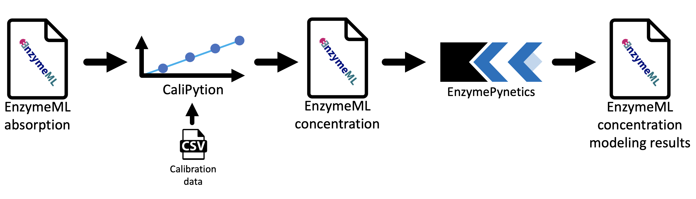
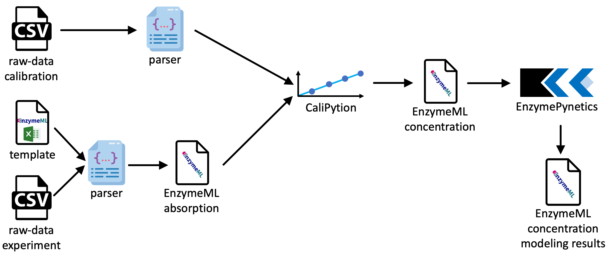

Welcome to my master thesis
Contents
Welcome to my master thesis#
This JupyterBook constitutes my master thesis. Within this thesis I developed a workflow for kinetic parameter estimation of enzyme reactions. Within multiple Jupyter Notebooks, which are included in this work, i show my developments and their capabilities in action, as I applied them to different ongoing EnzymeML projects.
Except for this page and the capability to execute Jupyter Notebooks, the printed version this book is identical to this Jupyter Book.
Acknowledgements#
First, I would like to thank Prof. Dr. Jürgen Pleiss for the opportunity to work on this project and the support throughout the work of this thesis. Furthermore, I would like to thank Associate Professor Marilize Le Roes-Hill together with Prof. Dr. Jürgen Pleiss for organizing and enabling my research visit to South Africa, which fueled the collaboration on the projects of this thesis.
My special thanks go to my project partners Alaric Prins, Marwa Mohamed, Chantal Daub, and Paulo Durão who provided the experimental data for the projects of this thesis as well as the fruitful and pleasant project discussions.
I would like to thank Jan Range and Torsten Gieß for their support as well as the whole group for inspiring and motivating seminar discussions.
Abstract#
In this work, an EnzymeML-based workflow for kinetic parameter estimation was developed, enabling a continuous data flow from raw data to kinetic parameters. For this purpose, two Python modules were developed and published on PyPI: CaliPytion facilitating precise calculation of concentrations based on analytical absorption data, whereas EnzymePynetics facilitates kinetic parameter estimation of single substrate enzyme reactions. Furthermore, EnzymePynetics is suited for inhibition studies. Moreover, the workflow was implemented in a Jupyter Notebook environment, enabling conclusive documentation of each data processing step. Hence, the workflow is transparent, additionally the application of the workflow is reproducible. FAIR data principles were implemented on multiple levels of this thesis. Consequently, this thesis was conceptualized as a Jupyter Book, making all data analysis and methodologies of this work Findable, Acessible, Interoperable and Reusable to the most possible degree.
Von Rohdaten zu kinetischen Parametern: ein EnzymeML basierter Workflow für reproduzierbare Enzymkinetik#
In dieser Arbeit wurde ein EnzymeML basierter Workflow zur Bestimmung kinetischer Parameter entwickelt, welcher einen kontinuierlichen Datenfluss von Rohdaten zu kinetischen Parametern ermöglicht. Zu diesem Zweck wurden zwei Python-Module entwickelt und auf PyPI veröffentlicht: CaliPytion, welches die präzise Berechnung von Konzentrationen auf der Grundlage analytischer Absorptionsdaten ermöglicht und EnzymePynetics, welches die Schätzung kinetischer Parameter von Enzymreaktionen mit einem Substrat ermöglicht. Außerdem ist EnzymePynetics für Inhibitionsstudien geeignet. Darüber hinaus wurde der Workflow in einer Jupyter-Notebook-Umgebung implementiert, was eine schlüssige Dokumentation der einzelnen Datenverarbeitungsschritte ermöglicht. Somit ist der Workflow transparent, während die Anwendung des Workflows reproduzierbar ist. Die FAIR-Prinzipien wurden in dieser Arbeit auf mehreren Ebenen umgesetzt. Daher wurde diese Arbeit als Jupyter Book konzipiert, um alle Datenanalysen und Methoden dieser Arbeit so weit wie möglich den FAIR-Kriterien Auffindbarkeit, Zugänglichkeit, Interoperabilität und Wiederverwendbarkeit entsprechend zu machen.
Introduction#
Reproducible research is the cornerstone of scientific advances and builds the core principle of the scientific method itself. Within the last decade, an increasing number of reports raised attention on unreproducible results across various scientific disciplines [Begley and Ioannidis, 2015]. Reportedly, more than 70 % of researchers were not able to reproduce the results of another researcher, whereas more than 50 % were not able to reproduce their own findings [Baker, 2016].
Since reproducibility is a non-standardized term, it often serves as a vague umbrella term for mingling (i) repeatable analysis based on given information by the same scientist, (ii) reproducible analysis based on given information by another scientist, or (iii) replicable analysis with new information by another scientist.
Therefore, reproducibility is not an absolute term but rather relative, depending on the scope of the notion [Goodman et al., 2016]. Goodman et. al. proposed to combine the word reproducibility with its relative scope, hence subdividing reproducibility in “methods reproducibility”, “results reproducibility” and “inferential reproducibility”. According to Goodman, ‘methods reproducibility refers to the provision of enough detail about study procedures and data so the same procedures could, in theory or in actuality, be exactly repeated.’. Results reproducibility requires methodological reproducibility, so that the same results are obtained from an independent study. Inferential reproducibility is given, if qualitatively similar conclusions are drawn based on the results of independent studies or reanalysis of a given study. Therefore, inferential reproducibility constitutes the highest level of reproducibility.
Possible reasons for non-reproducible experiments are broadly discussed and range from study design, to publication bias and malpractice [Munafò et al., 2017], [Miyakawa, 2020] [Baker, 2016]. Once published, the results of non-reproducible studies are harmful for science, since the reported results along the generated data assets are likely false.
Low reproducibility also affects the field of enzymology, where varying experimental standards are described as the leading cause [Bell et al., 2021]. With the aim to increase reproducibility on biocatalytic experiments the STRENDA commission has defined standards for reporting enzymology data (STRENDA) [Tipton et al., 2014]. The guidelines recommend reporting on identity information of the enzyme, enzyme preparation steps, storage conditions, assay conditions and method, as well as enzyme activity with the corresponding kinetic parameters and units. Furthermore, the precision of measurements and preferably the raw data itself should be shared. Hence, the STRENDA guidelines pave the way for reproducible and therefore reusable functional enzymology data.
Besides the reproducibility of data, availability of data assets must be given in order to enable reuse of extant data. This is especially important to enable the application of big data technologies, like machine learning which rely on large amounts of high quality data. In the field of biocatalysis, machine learning bares the potential to investigate how the structures of an enzyme is related to its catalytic properties. Thereby, valuable conclusions for enzyme engineering might be drawn.
One prerequisite for applying big data technologies and therefore use their potential in biocatalysis is the availability of data. With the scope to enhance data reusability, FAIR guiding principles for scientific data management were established [Wilkinson et al., 2016]. The acronym FAIR denotes four foundational principles for contemporary data management in a Findable, Accessible, Interoperable and Reusable fashion. Special emphasis is placed on machines being able to find and use the data, due to their fundamental importance in modern science. Thereby, (meta)data should be findable by a globally unique identifier. Data should be accessible by a standardized and open protocol. Interoperability is achieved, if data contains qualitative references to other (meta)data and uses conclusive vocabulary. For reusability, the data needs to be extensively describes with accurate and relevant attributes [Wilkinson et al., 2016]. Broad application of the stated principles will promote the reuse of data and ultimately amplify the knowledge which can be deduced from each published dataset.
To enable data exchange in biocatalysis the standardized exchange format EnzymeML was developed, abiding by FAIR data principles as well as STRENDA guidelines [Pleiss, 2021]. Within an EnzymeML document information on the reaction conditions, obtained measurement data, as well as modeling results are stored. As such, reaction conditions contain information on the pH value, temperature and the reaction vessel. Each species within a reaction like substrate, product or inhibition species is uniquely labeled with an identifier, which allows referencing the specific species in databases. Thereby, proteins are labeled with their UniProt id, and reactants are labeled with their respective SMILES or InChI code.
A special focus of the EnzymeML format is to store the modeling results which are extracted from the experimental data which are stored alongside.
Modeling results and information on model parameters and model equations can be stored alongside the respective measurement data of which the results are based on. In summary, data and meta data of biocatalytic experiments can be stored and shared between scientists and databases compliant with contemporary data management practices.
In this work, a computational workflow based on EnzymeML for kinetic parameters estimation of enzyme reactions was developed with the following requirements: The workflow should enable comprehensive data analysis starting from raw data of enzyme kinetics experiments to kinetic parameter estimates. The workflow should be iteratively developed by applied by workflow on ongoing research projects of EnzymeML project partners. Therefore, two software packages should be developed, which facilitate the parameter estimation process. Finally, the estimated parameters should be written back to the EnzymeML file, unifying measurement data with information on the applied estimation model as well as the resulting kinetic parameters.
Methods#
EnzymeML and PyEnzyme#
In this work, EnzymeML documents were read, edited, and written via the Python API PyEnzyme [Range et al., 2021], providing the possibility to integrate PyEnzyme in Python-based data analysis workflows. Thereby, EnzymeML documents were used as a data source, or modeling results were written back to the document.
Creation of EnzymeML documents#
EnzymeML documents were created using the EnzymeML Excel template, in combination with the .fromTemplate() method of PyEnzyme. Within the spreadsheet, data and metadata of an experiment were filled in the respective sheets. Alternatively, only metadata was entered to the spreadsheet, whereas measurement data was parsed by a custom Python function from the output file of the analytical device to the measurement data section of the EnzymeML document.
Saving of modeling results#
Modeling results from parameter estimation were written back to the EnzymeML document, which contained the measurement data by using PyEnzyme.
CaliPytion#
CaliPytion was developed to provide an easy way to find the best model by which the relationship between analytical signal to analyte concentration of photometric measurements can be determined. The resulting StandardCurve is created based on a provided analyte standard. Besides a linear calibration equation, non-linear calibration models were implemented. All implemented calibration equations (1), (2) (3), (4) (5) are listed below, whereas the \(A\) denotes the absorption, \(x\) the concentration, and \(a, b, c\) the respective parameters of each equation.
During the fitting process, all calibration equations are fitted against the analyte standard by non-linear least-square minimization. Therefore, the Python library lmfit [Newville et al., 2016] was utilized. The best fitting model is then selected based on the lowest Akaike information criterion (AIC). Furthermore the fit of the models can be visually assessed by calling the .visualize() method of the StandardCurve class. After the calibration curves are fitted, concentration of unknown samples are determined by calculating the root of the fitted calibration model.
Data model#
The StandardCurve functionality of CaliPythion is based on a data model, structuring data and metadata of calibration measurements. Thereby, calibration conditions like temperature, pH, and information about the analytical device can be provided. Furthermore, the name as well as an ID can be specified for the analyzed substance. All of this information is stored in the Calibration root object. Additionally, the root object can contain a Standard and a Spectrum.
A Standard contains measurements of multiple predefined concentrations and a wavelength at which the measurement was conducted. Additionally, a Spectrum can be defined by providing measurement data as well as the respective wavelengths at which the data was measured. The data model was generated using sdRDM, a python tool allowing the creation and versioning of data models.
Initialization#
A StandardCurve can be initialized directly from an Excel file by calling StandardCurve.from_Excel()
Therefore, the first column must contain concentration data, whereas all following columns contain the according measurement data. The first row is not considered and should be used to label the data.
Alternatively a StandardCurve can be initialized by providing a Calibration object, which contains the calibration data.
After StandardCurve initialization, concentrations can be calculated by calling the .get_concentration() method. Alternatively, a StandardCurve can be directly applied to an EnzymeMLDocument by calling the .apply_to_EnzymeML() method. The code cell below demonstrates schematically, how absorption data in an EnzymeMLDocument is transformed to concentration data by applying StandardCurve.
enzmldoc_absorption = EnzymeMLDocument()
# Create standard curve
product_standard = StandardCurve()
# Apply standard curve to species 's1' of the EnzymeMl document
enzmldoc_concentration = product_standard.apply_to_EnzymeML(
enzmldoc=enzmldoc_absorption,
species_id="s1")
Code availability#
CaliPytion was published on the Python packaging index (PyPI) whereas the source code is accessible on GitHub.
EnzymePynetics#
EnzymePynetics is a Python package for kinetic parameter estimation of single-substrate enzyme reactions. The ParameterEstimator of EnzymePynetics estimates the turnover number and Michaelis-Menten constant by fitting time-course measurement data of enzyme reactions to different Michaelis-Menten models. Thereby, the residuals between measurement data and integrated Michaelis-Menten rate equations are minimized through a non-linear least-squares algorithm utilizing the lmfit library. Additionally, the inhibition constant \(K_{i}\) can be assessed for potential substrate or product inhibition. Furthermore, \(K_{i}\) of an enzyme inhibitor apart from substrate or product can be determined for inhibitor studies.
Data model#
EnzymePynetics is based on a data model, resembling the experimental design of an enzyme kinetics assay. Thereby, all relevant data and metadata of a kinetic experiment are structured in the EnzymeKineticsExperiment base object. Thereby, reaction temperature with its respective unit, pH value, and the name of substance from which the measurement data originates. An EnzymeKineticsExperiment contains one or multiple Measurements, which contain the measurement data. Each measurement stores information of the experimental conditions of an enzyme reaction. Therefore, each Measurement contains information on the initial substrate concentration, enzyme concentration, and inhibitor concentration, along with the respective concentration units. Each Measurement contains measured data, which itself consist of one or multiple replicates of the respective experimental condition.
The data model was generated using sdRDM.
Extensive documentation of the data model can be accessed in the specifications of the software package.
Kinetic models#
Besides the irreversible Michaelis-Menten rate equation (6) inhibition models for competitive (7), uncompetitive (8), non-competitive (9) and partially competitive inhibition (10) were implemented, according to [Bisswanger, 2017]. Thereby, \(S\), \(E\), and \(I\) respectively denote the concentration of substrate, enzyme, and inhibitor. In terms of kinetic parameters, \(k_{cat}\) denotes the turnover number, \(K_{m}\) the Michaelis-Menten constant of the substrate, whereas \(K_{ic}\) and \(K_{iu}\) respectively describe the competitive and uncompetitive inhibition constant.
By default, \(E\) is assumed to be constant throughout the reaction. If required, the kinetic models can be extended by the parameter \(k_{inact}\), which describes the time-dependent inactivation rate of the enzyme. The decrease in active enzyme concentration is modeled by (11):
Each kinetic models therefore consists of a set of ordinary differential equations, describing the change in concentration of substrate, product and enzyme.
Run parameter estimation#
Initialization
The EnzymeKineticsExperiment object solely serves as a data container, whereas
the ParameterEstimator harbors the functionalities for parameter estimation. Data can be provided as an EnzymeKineticsExperiment object. Alternatively, an EnzymeMLDocument document can be provided as the data source via PyEnzyme by calling the .from_EnzymeML() method. Within the method, the id of the measured species needs to be specified according to the nomenclature of the EnzymeMLDocument. If the document contains information on an inhibitor, the respective id needs to be provided as well, if the inhibition constant should be estimated for the respective inhibitor.
Initially, missing data for the fitting process is calculated based on the assumption of mass conservation. As such, missing product concentration \(P\) is calculated based on the given substrate measurement data and the specified initial substrate concentration \(S_{0}\) for each measurement \(t\) ((12)). If product data is provided, missing substrate concentrations are calculated accordingly ((13)).
Fitting of models
After the ParameterEstimator is initialized, all kinetic models are initialized by calling the .fit_models() method. Furthermore, it can be determined whether enzyme inactivation should be considered for modeling. Depending on whether an inhibitor was specified, the models are initialized accordingly. If no inhibitor was specified, product and substrate inhibition models are initialized besides the irreversible Michaelis model. If inhibitor data was provided, the inhibition models are initialized with concentration data of the inhibitor. Thereafter, kinetic parameters of each model are initialized with estimates based on the highest reaction rate in the dataset. For minimization the parameter space is limited to ± 1000-fold of the initial parameter estimates.
After all models are fitted, an overview table is printed which lists all of the kinetic parameters of each model together with the respective 1σ standard deviation in percent. The table is sorted by ascending AIC.
Visualization
After model fitting, the modeling results can be visualized by calling the .visualize() method, which was implemented utilizing Matplotlib [Caswell et al., 2020].
Thereby, the measurement data is visualized together with the fitted kinetic model. If the experiment was carried out in replicates, mean values of the measurement data with the corresponding standard deviations are shown. If the experiment data contained reactions with different inhibitor concentrations, individual inhibitor concentrations are denoted by unique markers.
By default the best fitting model according AIC is visualized. Different models can be visualized by passing the name of the respective model to the function call. Besides the figure, a detailed statistical fit report is printed, if not specified otherwise.
Data units
So far, EnzymePynetics neither converts nor validates units of the measurement data. Hence, all data needs to be provided using the same molar or mass unit. Only the concentration unit of the inhibitor may differ from all other data units.
Code availability#
EnzymePynetics was published on the Python packaging index (PyPI) whereas the source code is available on GitHub.
Model comparison#
The kinetic model, which best describes the experimental data, was selected based on AIC, standard deviation of parameter estimates, and visual fit between measurement data and fitted model. AIC serves as a statistical metric for information loss, which allows to relatively compare different models with differing number of parameters for a given data set. Hence, AIC can be applied for model selection [Arnold, 2010], [Akaike, 1998]. Thereby, models with a lower AIC indicate less information loss. Since AIC is based on the chi-square statistic, it does not consider the standard deviation of the estimated parameters of a model. Therefore, standard deviation was additionally considered in model selection. Models with low standard deviation were therefore preferred over models with high standard deviation. Furthermore, fit quality was assessed visually by confirming that the model describes the progress curve of the experimental data.
Jupyter Notebook#
All developed tools were deployed in Jupyter Notebooks [Kluyver et al., 2016] for data analysis within a Python environment. A Jupyter Notebook is a digital document containing code cells and text cells. Thereby, executable code with its corresponding output can be supplemented with narrative text, figures, and equations. Besides the documentation capabilities, notebooks can be uploaded to platforms like GitHub or be deployed with Binder [Ragan-Kelley et al., 2018]. GitHub is a cloud-based Git repository, which enables versioning as well as collaborative working on projects involving any kind of code. Besides GitHub, sharing of Jupiter Notebooks is possible with the open-source project Binder, which allows hosting of notebooks. Thus, Jupyter Notebooks can be shared in an executable form, which is independent from the operating system and the location of the user. Only an internet connection and a browser is required. As a result, Jupyter Notebooks, which are executable through Binder, form a user-friendly environment for scientific data analysis. Due to the extensive documentation capabilities of Jupyter Notebooks, the analysis workflow is comprehensible and accessible for programmers as well as for non-programmers.
Jupyter Book#
The written thesis, except for the cover page, was entirely conceptualized as a Jupyter Book. Jupyter Book is an open-source tool that allows to incorporate computational material in publication-quality books [Community, 2020]. Thereby, Jupyter Notebooks can natively be integrated in Jupyter Books, thus making all advantages of the notebook also available in the book. Jupyter Books allow text formatting with Markdown, which is a simple markdown language. Furthermore, Jupyter Book supports cross-referencing, citations, and numbering of equations. Together with all data, the final and interactive book was deployed on GitHub Pages whereas the print version was generated by exporting the html-version of the book to pdf.
Results#
Workflow for enzyme kinetics parameter estimation#
In this work, a Python-based analysis workflow for kinetic parameter estimation of enzyme reactions was developed. The workflow itself consists of the steps (i) data acquisition, (ii) raw data preparation, (iii) concentration calculation, (iv) quality control, (v) modeling, and (vi) saving of results. For precise concentration calculations as well as kinetic parameter estimation the two Python modules CaliPytion and EnzymePynetics were respectively developed over the course of this work.
The two packages were designed to seamlessly interact with EnzymeML documents which were modified using PyEnzyme and thus allowing a continuous data stream from analytical raw data to kinetic parameters.
Starting from raw data of photometric measurements, which are stored in an EnzymeML document, concentration values are calculated by CaliPytion, whereupon kinetic parameters are determined by EnzymePynetics. Finally, the modeling results are written back to the EnzymeML document via PyEnzyme (Fig. 1).
 Fig. 1: Components of the kinetic parameter estimation workflow for enzyme reaction data.
A key aspect of the workflow design was to enable reproducible analysis. Therefore, documentation of raw data treatment prior to modeling is vital. As a result, Jupyter Notebooks were used as a platform, since they allow to write text and code within the same document.
CaliPytion#
CaliPytion was developed to facilitate robust conversion of measurement data to concentration data. Based on an analyte standard, a calibration curve is created. Since linear and non-linear relations between analyte concentration and analytic signal may occur, [Hsu and Chen, 2010], [Martin et al., 2017], linear, polynomial, exponential, and rational calibration equations were implemented. After fitting, the best model is preselected based on Akaike information criterion [Akaike, 1998], offering a metric to compare models with different number of parameters. Thereby, AIC describes the information loss relative to alternative models, while penalizing the use of additional parameters. CaliPytion was designed to work with PyEnzyme. Hence, a StandardCurve of CaliPytion can natively by applied to an EnzymeMLDocument of PyEnzyme. As a result, absorption data of an EnzymeML document can be converted into concentration data based on the previously generated standard curve.
EnzymePynetics#
EnzymePynetics was developed to enable easy applicable parameter estimation of single substrate enzyme reactions directly from EnzymeML documents. At its core, the ParameterEstimator of EnzymePynetics fits experimental data to different Michaels-Menten type models. Besides the irreversible Michaelis-Menten model, competitive, non-competitive, uncompetitive, and partially competitive inhibition models were implemented. Hence, the inhibition constant of potentially inhibiting substrate or product can be estimated. Furthermore, the inhibition constant of an applied inhibitor can be quantified. Since, the experimental data is fitted against multiple kinetic models, the best fitting model is suggested based on AIC. Hence, a proposal of the enzyme’s kinetic mechanism is given based on the best fitting model.
For quality control, visualization of experimental data as well as the fitted kinetic model was a priority during development. Thereby, detection of systematic deviation between model and measurement data is possible. Furthermore, the ParameterEstimator allows to subset the measurement data by time as well as initial substrate concentration without deleting data. Hence, identified systematic deviations (e.g. lag-phases or measurements with incorrect enzyme concentrations) can be excluded from parameter estimation.
Like the StandardCurve of CaliPytion, the ParameterEstimator of EnzymePynetics natively supports EnzymeMLDocuments as a data source.
Scenario-driven workflow development#
The development of the workflow was driven by different research scenarios of EnzymeML project partners. The goal for all projects was to reliably determine kinetic parameters of enzyme reactions.
The collaboration consisted of multiple rounds of lab experiments (preformed by the experimental partners) and kinetic modeling of the experimental data. Each round included (i) wet lab experiments, (ii) kinetic modeling, (iii) design of follow-up experiments, and (iv) discussion of results with the respective project partners. Hence, a short feedback loop between lab experiments and modeling-based experimental suggestions was established.
In parallel, the Python modules CaliPytion and EnzymePynetics were developed. Thereby, individual requirements of each research scenario fostered the implementation of various functionalities, resulting in a feature-rich yet generic workflow.
FAIR data analysis with Jupyter Notebooks#
All data analysis of the project was carried out in Jupyter Notebook by applying the developed workflow for kinetic parameter estimation. Within the next chapters, the latest results of all four experimental scenarios are shown. Thereby, the applicability of the workflow is demonstrated while analyzing and discussing the results of the respective scenario. Since the analysis was conducted in Jupyter Notebooks, each of the following chapter is a executed Jupyter Notebook. Hence all figures and tables for data visualization are generated at runtime of the analysis. Thereby, the applicability of Jupyter Notebooks for reproducible and comprehensive computational workflows in a scientific environment is demonstrated. Every scenario consists of a short description of the project’s background and methodology carried out by the project partners in the laboratory. Additionally, data preparation, kinetic modeling steps, as well as the results are shown and project specific results are discussed. All notebooks can be launched interactively by clicking on the -icon in the upper section of each scenario page. As a result, the analysis itself is transparent, and the developed workflow is demonstrated in its native environment. Therefore, it is highly recommended to read this work in its conceptualized form.
Scenario A:
Chymotrypsin inhibiton by an in silico designed albumin fusion protein#
Data provided by Marwa Mohamed (Institute of Cell Biology and Immunology, University of Stuttgart, Germany)
Project background#
In this scenario, the binding of an in silico designed protein to an enzyme was assessed by determining the inhibitory constant \(K_{i}\). Thereby, the efficiency of the newly developed approach for computational design of protein binders to deliberately chosen targets was demonstrated. This was done by comparing \(K_{i}\) of the designed human serum albumin variant (HSA(M3)) to the wild-type (HSA(WT)) by respectively applying the proteins to chymotrypsin enzyme reactions. Both designed proteins were individually dimerized into fusion proteins through a huFc.
Experimental design#
Enzyme activity was monitored by measuring the product formation of p-Nitroanilin (p-NA) photometrically at 410 nm for 30 min at 30°C. Therefore, Succinyl-gly-gly-phe-p-nitroanilide (SGGPpNA) was applied as substrate in a concentration range of 0.25 - 2 mM. For concentration calculations, p-NA standard was prepared in the range of 0 - 0.3 mM in duplicates. \(K_{i}\) of HSA(WT)-huFc and HSA(M3)-huFc on chymotrypsin were investigated in independent experiments. Each experiment consisted of enzyme reactions with and without the respective HSA variant. Each enzyme reaction contained 0.2 µM of enzyme and 26.88 µM of the respective HSA variant, if inhibitor was applied. All enzyme reactions were prepared in duplicates.
Data management#
Experimental data and meta data was filled in EnzymeML Excel templates for each of the two inhibition experiments respectively. Calibration data was stored as Excel files. Measurement data was already blanked.
Data preparation#
Imports#
import numpy as np
import pandas as pd
import matplotlib.pyplot as plt
import pyenzyme as pe
import copy
import string
from IPython.display import display
from EnzymePynetics.tools.parameterestimator import ParameterEstimator
from CaliPytion .tools.standardcurve import StandardCurve
import warnings
warnings.filterwarnings('ignore')
Concentration calculation#
Product standard data was imported directly from an Excel file. Then, a standard curve was created.
product_standard = StandardCurve.from_excel(
path="../../data/chymotrypsin_inhibition/pNA-standard.xlsx",
reactant_id="s1",
wavelength=410,
sheet_name="csv",
concentration_unit="mmole / l",
temperature=30,
temperature_unit="C")
product_standard.visualize()
Calibration data was automatically blanked.
| AIC | |
|---|---|
| Quadratic | -161 |
| 3rd polynominal | -161 |
| Linear | -143 |
| Rational | -141 |
| Exponential | -17 |

Fig. 2: Fitted quadratic calibration model to standard data of p-NA.
Based on the Akaike information criterion (AIC), the relation between concentration and absorption is best described by a quadratic function. The calibration measurements and the fitted calibration model are shown in Fig. 2.
Experimental data#
The EnzymeML documents of each experiment were loaded and the standard curve was applied to the absorption data to calculate concentrations.
# Load data from
chymo_HSAwt = pe.EnzymeMLDocument.fromTemplate("../../data/chymotrypsin_inhibition/chymo_HSAwt.xlsx")
chymo_HSAM3 = pe.EnzymeMLDocument.fromTemplate("../../data/chymotrypsin_inhibition/chymo_HSA(M3).xlsx")
# Apply standard curve to 'EnzymeMLDocument'
chymo_HSAwt = product_standard.apply_to_EnzymeML(chymo_HSAwt, "s1")
chymo_HSAM3 = product_standard.apply_to_EnzymeML(chymo_HSAM3, "s1")
Comparability of the experiments#
Since experimental data with HSA(WT)-huFc and HSA(M3)-huFc originate from independent experiments, the control reactions without the respective inhibitor were compared by performing a parameter estimation (Fig. 3). Thereby, catalytic efficiency \(\frac{k_{cat}}{K_{m}}\) was used to assess comparability between the data sets, since \(k_{cat}\) and \(K_{m}\) were highly correlated (corr > 0.98). High correlations between parameters indicate that the parameters cannot be determined independently with certainty. In this case, the highest initial substrate concentration is presumably too low, compared to the true \(K_{m}\) of the enzyme under the given experimental conditions. However, higher substrate concentration were not applied for multiple reasons. On the one hand dimethyl sulfoxide (DMSO) was used as a co-solvent of the substrate, which inhibits enzyme activity [Busby et al., 1999]. Hence, higher initial substrate concentrations would have led to higher enzyme inhibition, which would have distorted the assessment of \(K_{i}\). On the other hand, high substrate viscosity denied the application of higher concentrations without sacrificing pipetting precision.
# Create copies of the data sets and delete measurements with inhibitor.
wt_control = copy.deepcopy(chymo_HSAwt)
del wt_control.measurement_dict["m4"]
del wt_control.measurement_dict["m5"]
del wt_control.measurement_dict["m6"]
del wt_control.measurement_dict["m7"]
m3_control = copy.deepcopy(chymo_HSAM3)
del m3_control.measurement_dict["m4"]
del m3_control.measurement_dict["m5"]
del m3_control.measurement_dict["m6"]
del m3_control.measurement_dict["m7"]
# Estimate kinetic parameters of the control reactions of the HSA wild-type data set.
kinetics_wt_control = ParameterEstimator.from_EnzymeML(wt_control, "s1", "product")
kinetics_wt_control.fit_models(stop_time_index=-1, display_output=False)
print("Kinetic parameters of HSA(wt) chymotrypsin control reactions:")
display(kinetics_wt_control.result_dict\
.style.set_table_attributes('style="font-size: 12px"'))
# Estimate kinetic parameters of the control reactions of the HSA(M3) data set.
kinetics_m3_control = ParameterEstimator.from_EnzymeML(m3_control, "s1", "product")
kinetics_m3_control.fit_models(stop_time_index=-1, display_output=False)
print("\nKinetic parameters of HSA(M3) chymotrypsin control reactions:")
display(kinetics_m3_control.result_dict\
.style.set_table_attributes('style="font-size: 12px"'))
fig, axes = plt.subplots(1,2, figsize=(12.8,4.8), sharey=True, sharex=True)
for e, (doc, ax, title) in enumerate(zip([kinetics_wt_control ,kinetics_m3_control], axes.flatten(), ["chymotrypsin control reactions HSA(wt)", "chymotrypsin control reactions HSA(M3)"])):
doc.visualize(ax=ax, title=title)
ax.set_ylabel("4-nitroanilin [mM]")
ax.set_xlabel("time after reaction start [min]")
ax.set_xticks([5, 10, 15, 20])
ax.text(0, 1.1, string.ascii_uppercase[e], transform=ax.transAxes,
size=20, weight='bold')
handles, labels = ax.get_legend_handles_labels()
fig.legend(handles, labels, loc="lower center", ncol=4, title="initial SGGPpNA [mM]", bbox_to_anchor=(0.5,-0.15))
plt.tight_layout()
Kinetic parameters of HSA(wt) chymotrypsin control reactions:
| AIC | kcat [1/min] | Km [mmole / l] | kcat / Km [1/min * 1/mmole / l] | Ki competitive [mmole / l] | Ki uncompetitive [mmole / l] | |
|---|---|---|---|---|---|---|
| irreversible Michaelis Menten | -1857 | 56.440 +/- 4.52% | 2.226 +/- 7.28% | 25.353 +/- 8.57% | - | - |
| competitive product inhibition | -1856 | 60.225 +/- 9.01% | 2.342 +/- 9.88% | 25.714 +/- 13.37% | 0.725 +/- 112.65% | - |
| uncompetitive product inhibition | -1855 | 57.529 +/- 8.30% | 2.276 +/- 10.65% | 25.272 +/- 13.50% | - | 3.175 +/- 428.92% |
| substrate inhibition | -1855 | 56.585 +/- 29.14% | 2.233 +/- 35.51% | 25.339 +/- 45.93% | - | 997.715 +/- 12275.11% |
| non-competitive product inhibition | -1854 | 60.110 +/- 9.50% | 2.331 +/- 10.00% | 25.787 +/- 13.79% | 0.702 +/- 117.81% | 179.118 +/- 358.38% |
Kinetic parameters of HSA(M3) chymotrypsin control reactions:
| AIC | kcat [1/min] | Km [mmole / l] | kcat / Km [1/min * 1/mmole / l] | Ki competitive [mmole / l] | Ki uncompetitive [mmole / l] | |
|---|---|---|---|---|---|---|
| irreversible Michaelis Menten | -549 | 48.996 +/- 2.23% | 1.978 +/- 3.74% | 24.776 +/- 4.35% | - | - |
| competitive product inhibition | -549 | 51.227 +/- 4.39% | 2.043 +/- 4.76% | 25.077 +/- 6.47% | 0.908 +/- 81.63% | - |
| uncompetitive product inhibition | -547 | 49.384 +/- 5.33% | 1.996 +/- 6.71% | 24.743 +/- 8.57% | - | 7.445 +/- 631.41% |
| non-competitive product inhibition | -547 | 51.241 +/- 5.62% | 2.044 +/- 6.62% | 25.073 +/- 8.69% | 0.914 +/- 83.56% | 121.556 +/- 2156.85% |
| substrate inhibition | -545 | 50.368 +/- 3.78% | 2.046 +/- 5.12% | 24.623 +/- 6.36% | - | 87.549 +/- 121.66% |
Fig. 3: Measurement data and fitted irreversible Michaelis-Menten model for chymotrypsin reactions without HSA inhibitor.
The two datasets were fitted against kinetic models, which are displayed in the tables above. Each dataset is best described by the irreversible Michaelis-Menten model in terms of AIC and standard deviation on the estimated parameters. Models with product or substrate inhibition resulted in large uncertainties above 80 % on the parameter estimates. Therefore, irreversible Michaelis-Menten model was utilized for comparison of parameters. \(\frac{k_{cat}}{K_{m}}\) was estimated to be 25.353 min-1mM-1 ± 8.57% for the control reaction of the HSA(WT)-huFc data set and 24.776 min-1mM-1 ± 4.35% for the HSA(M3)-huFc data set. As a result, the two experiments showed to be comparable, since the catalytic efficiency differs less than 3 % between the two data sets.
Determination and comparison of \(K_{i}\)#
Experimental data of chymotrypsin inhibition by HSA(M3)-huFc contained negative absorption values for the first measurement point, presumably sourcing from an incorrect blank measurement. Therefore, only measurement data from the second data point (minute 5 and onward) was considered for parameter estimation. Parameter estimates for all applied kinetic models are displayed in the output below and visualized in Fig. 4.
# Parameter estimation for HSA(wt) data set
kinetics_HSAwt = ParameterEstimator.from_EnzymeML(chymo_HSAwt, reactant_id="s1", inhibitor_id="s2", measured_species="product")
kinetics_HSAwt.fit_models(initial_substrate_concs=[0.25, 0.5, 1, 2], stop_time_index=-1, start_time_index=5, display_output=False)
print("Kinetic parameters estimates for all models of chymotrypsin inhibition by HSA(WT)-huFc:")
display(kinetics_HSAwt.result_dict.drop(columns=["kcat [1/min]", "Km [mmole / l]"])\
.style.set_table_attributes('style="font-size: 12px"'))
# Parameter estimation for HSA(M3) data set
kinetics_HSAM3 = ParameterEstimator.from_EnzymeML(chymo_HSAM3, reactant_id="s1", inhibitor_id="s3", measured_species="product")
kinetics_HSAM3.fit_models(initial_substrate_concs=[0.25, 0.5, 1, 2], stop_time_index=-1, start_time_index=1, display_output=False)
print("\nKinetic parameters estimates for all models of chymotrypsin inhibition by HSA(M3)-huFc:")
display(kinetics_HSAM3.result_dict.drop(columns=["kcat [1/min]", "Km [mmole / l]"])\
.style.set_table_attributes('style="font-size: 12px"'))
# Visualize experimental data and fitted models
fig, axes = plt.subplots(1,2, figsize=(12.8,4.8), sharey=True, sharex=True)
for e, (doc, ax, title) in enumerate(zip([kinetics_HSAwt ,kinetics_HSAM3], axes.flatten(), ["chymotrypsin inhibition by HSA(WT)-huFc", "chymotrypsin inhibition by HSA(M3)-huFc"])):
doc.visualize(ax=ax, title=title)
ax.set_ylabel("4-nitroanilin [mM]")
ax.set_xlabel("time after reaction start [min]")
ax.set_xticks([5, 10, 15, 20])
ax.text(0, 1.1, string.ascii_uppercase[e], transform=ax.transAxes,
size=20, weight='bold')
handles, labels = ax.get_legend_handles_labels()
fig.legend(handles, labels, loc="lower center", ncol=2, title="initial SGGPpNA [mM]", bbox_to_anchor=(0.5,-0.2))
plt.tight_layout()
Kinetic parameters estimates for all models of chymotrypsin inhibition by HSA(WT)-huFc:
| AIC | kcat / Km [1/min * 1/mmole / l] | Ki competitive [mmole / l] | Ki uncompetitive [mmole / l] | |
|---|---|---|---|---|
| competitive inhibition | -3100 | 22.253 +/- 6.97% | 0.460 +/- 27.24% | - |
| non-competitive inhibition | -3098 | 22.403 +/- 7.00% | 0.449 +/- 27.64% | 79.193 +/- 516.52% |
| irreversible Michaelis Menten | -3088 | 21.622 +/- 7.15% | - | - |
| uncompetitive inhibition | -3087 | 21.631 +/- 7.63% | - | 0.696 +/- 88.99% |
| partially competitive inhibition | -3084 | 21.643 +/- 8.23% | 796.196 +/- 1075.02% | 992.685 +/- 48.74% |
Kinetic parameters estimates for all models of chymotrypsin inhibition by HSA(M3)-huFc:
| AIC | kcat / Km [1/min * 1/mmole / l] | Ki competitive [mmole / l] | Ki uncompetitive [mmole / l] | |
|---|---|---|---|---|
| competitive inhibition | -808 | 23.031 +/- 10.48% | 0.059 +/- 8.51% | - |
| non-competitive inhibition | -806 | 23.002 +/- 10.89% | 0.060 +/- 9.04% | 44.965 +/- 302.77% |
| uncompetitive inhibition | -751 | 19.297 +/- 21.77% | - | 0.035 +/- 21.33% |
| irreversible Michaelis Menten | -713 | 18.512 +/- 24.41% | - | - |
| partially competitive inhibition | -709 | 18.544 +/- 27.64% | 569.354 +/- 57.96% | 925.096 +/- 11733.22% |

Fig. 4: Measurement data and fitted product inhibition model for chymotrypsin reactions with respective HSA inhibitior.
Both reaction systems are best described by the competitive inhibition model, which is indicated by the lowest AIC and standard deviation on the estimated parameters. Thereby, a \(K_{i}\) of 0.460 mM ± 27.24% was estimated for HSA(WT)-huFc and 0.059 mM ± 8.51% for HSA(M3)-huFc. This resembles a roughly 7-fold increase in affinity of HSA(M3) to the enzyme compared to the HSA(wt). Since the competitive inhibition model describes the data the best, HSA(M3)-huFc presumably interacts with the enzyme in the active site region.
Save modeling results#
Lastly, the modeling results are written to the EnzymeML documents and the files are exported.
for result, enzmldoc in zip([kinetics_HSAwt, kinetics_HSAM3], [chymo_HSAwt, chymo_HSAM3]):
# Write modeling results to kinetic parameters
k_cat = pe.enzymeml.models.KineticParameter(
name="k_cat",
value=result.get_model_results()["k_cat"].value,
unit=f"1 / {result.data.time_unit}")
K_m = pe.enzymeml.models.KineticParameter(
name="K_m",
value=result.get_model_results()["Km"].value,
unit=result.data.data_conc_unit)
K_ic = pe.enzymeml.models.KineticParameter(
name="K_ic",
value=result.get_model_results()["K_ic"].value,
unit=result.data.data_conc_unit)
# Define kinetic model
model = pe.KineticModel(
name="competitive inhibition",
equation="-k_cat * p0 * s0 / (K_m*(1+(s2 / K_ic))+s0)",
parameters=[k_cat, K_m, K_ic])
enzmldoc.getReaction("r0").model = model
# Export EnzymeML documents
export = False
if export:
enzmldoc.toFile()
Scenario B:
α-glucosidase inhibition by fucoidan#
Data provided by Chantal Daub (Biochemistry, Rhodes University, Makhanda, South Africa)
Project background#
In this scenario, the inhibitory properties of fucoidan on \(\alpha\)-glucosidase from Saccharomyces cerevisiae were analyzed. Fucoidan is a sulfated polysaccharide found in various brown algae. The polysaccharide is investigated as a potential active compound in the fields of anti-cancer, anti-inflammation, and anti-coagulate research, among others [Li et al., 2008]. Furthermore, fucoidan showed to be a promising drug for diabetes mellitus treatment, since it effectively inhibits \(\alpha\)-glucosidase. Recently, Daub et al. [2020] showed that \(\alpha\)-glucosidase inhibition by fucoidan from E. maxima exhibited significantly stronger inhibition, compared to the established diabetes drug acarbose.
In the following analysis, \(\alpha\)-glucosidase was exposed to fucoidan from Ecklonia maxima, Ecklonia radiata, Fucus vesiculosus, and Schimmelmannia elegans to test their respective capability of \(\alpha\)-glucosidase inhibiton by assessing their respective \(K_{i}\) values.
Experimental design#
\(\alpha\)-glucosidase reactions, catalyzing the hydrolysis of p-nitrophenyl glucopyranoside (p-NPG) to p-nitrophenol (p-NP) were conducted with and without fucoidan from each seaweed species as well as acarbose. Fucoidan was applied in two different concentrations. p-NPG was applied in a range from 0.1 mM to 5 mM, to enzyme reactions containing 9.19 µM \(\alpha\)-glucosidase. Product formation was recorded photometrically at 405 nm and 37°C for 20 min. Product concentrations were calculated utilizing a photometric p-NP standard. Additionally, control reactions without enzyme were prepared to subtract the absorption contribution of the respective inhibitor, buffer, enzyme and substrate from each measurement.
Data preparation#
Imports and parser function#
from typing import Dict
import pandas as pd
import numpy as np
import matplotlib.pyplot as plt
import matplotlib.colors as mcolors
import re
import os
import pyenzyme as pe
from IPython.display import display
from CaliPytion.tools.standardcurve import StandardCurve
from EnzymePynetics.tools.parameterestimator import ParameterEstimator
import warnings
warnings.filterwarnings('ignore')
colors = list(mcolors.TABLEAU_COLORS.values())
# Parser
def measurement_data_to_EnzymeML(
template_path: str,
measurement_data: np.ndarray,
species_id: str,
time: np.ndarray,
data_unit: str,
time_unit: str
) -> pe.EnzymeMLDocument:
enzmldoc: pe.EnzymeMLDocument = pe.EnzymeMLDocument.fromTemplate(template_path)
for IDs, concentration in zip(enzmldoc.measurement_dict.keys(), measurement_data):
for counter, replicate in enumerate(concentration):
enzmldoc.getMeasurement(IDs).addReplicates(pe.Replicate(
id=f"Measurement{counter}",
species_id=species_id,
data=list(replicate),
data_unit=data_unit,
time=list(time),
time_unit=time_unit), enzmldoc)
return enzmldoc
# Ignore hidden files in file stystem
def listdir_nohidden(path):
for f in os.listdir(path):
if not f.startswith('.'):
yield f
Measurement data was provided as an Excel file, whereas metadata was filled in EnzymeML Excel templates for each fucoidan seaweed species and acarbose respectively. In preliminary experiments, p-NPG showed to slightly absorb at the product detection wavelength. Therefore, the absorbance contribution of substrate at the product detection wavelength was subtracted as well as the contributions of enzyme, buffer and inhibitor. Then, the blanked absorbance data was written to the EnzymeML documents by a parser function.
dataset_path = "../../data/glucosidase_inhibition/experimental_data_real.xlsx"
template_directory = "../../data/glucosidase_inhibition/EnzymeML_templates"
enzml_docs = []
# Load experimental data from Excel
excel_sheets = sorted(pd.ExcelFile(dataset_path).sheet_names)
inhibitors = excel_sheets[:-1]
substrate_controls = excel_sheets[-1]
initial_substrates = [0.1, 0.25, 0.5, 1, 2.5, 5] # mM
# Blank data
## Absorption contribution from substrate
substrate_absorption_data = pd.read_excel(dataset_path, sheet_name=substrate_controls).set_index("time")
buffer_enzyme_absorption = np.mean(substrate_absorption_data.iloc[:,0])
substrate_absorptions = substrate_absorption_data.subtract(buffer_enzyme_absorption).drop(columns=["Buffer+ Enzyme"])
substrate_absorptions = substrate_absorptions.values.T.reshape(2,6,21)
substrate_absorptions = np.mean(substrate_absorptions, axis=0)
substrate_absorptions = np.mean(substrate_absorptions, axis=1)
mapper_substrate_enzyme_absorption = dict(zip(initial_substrates, substrate_absorptions))
for inhibitor, template in zip(sorted(inhibitors), sorted(listdir_nohidden(template_directory))):
df = pd.read_excel(dataset_path, sheet_name=inhibitor).set_index("time")
time = df.index.values
inhibitor_controls = df.iloc[:,:4]
inhibitor_concs = np.unique([float(conc.split(" ")[-2]) for conc in inhibitor_controls.columns])
inhibitor_absorptions = inhibitor_controls.values.T.reshape(2,2,21)
inhibitor_absorptions = np.mean(inhibitor_absorptions, axis=1)
inhibitor_absorptions = np.mean(inhibitor_absorptions, axis=1)
mapper_inhibitor_absorption = dict(zip(inhibitor_concs, inhibitor_absorptions))
mapper_inhibitor_absorption[0.0] = buffer_enzyme_absorption
df = df.iloc[:,4:]
for column in df.columns:
init_substrate = float(column.split(" ")[4])
inhibitor_conc = float(column.split(" ")[1])
df[column] = df[column] - mapper_substrate_enzyme_absorption[init_substrate]
df[column] = df[column] - mapper_inhibitor_absorption[inhibitor_conc]
data = df.values.T.reshape(3,2,6,21)
data = np.moveaxis(data,1,2).reshape(18,2,21)
# Parse measurement data to EnzymeML documents
enzml_docs.append(measurement_data_to_EnzymeML(
template_path=f"{template_directory}/{template}",
measurement_data=data,
time=time,
species_id="s1",
data_unit="mmole / l",
time_unit="min"
))
Data quality#
In the next cell, the blanked absorption data of each EnzymeML document is visualized with the .visualize()-method of PyEnzyme for quality control.
for doc in enzml_docs:
print(doc.name)
doc.visualize()
plt.show()
a-glucosidase inhibition by acarbose

a-glucosidase inhibition by fucoidan from E. maxima

a-glucosidase inhibition by fucoidan from E. radiata
a-glucosidase inhibition by fucoidan from F. vesiculosus
a-glucosidase inhibition by fucoidan from S. elegans

The technical output of the cell above visualizes the blanked product absorbance data of each dataset. Therein, the individual measurements are labeled from m0 - m17, which represent individual experimental conditions: measurements m0 - m5 are from reactions without inhibitor, m6 - m11 reactions with the lower inhibitor concentration, and m12 - m17 originate from reactions with the higher inhibitor concentration. Each subplot contains the data of two experimental repeats.
In most reactions a decrease followed by an increase of reaction rate is visible around minute 5. Since each dataset originates from a continuous photometric measurement carried out on a single MTP, the observed behavior likely sources from an analytical device malfunction. Additionally, one repeat of measurement ‘m8’ from the acarbose dataset shows low absorption, which is inconsistent with comparable measurements. Therefore, ‘m8’ was excluded from the dataset.
del enzml_docs[0].measurement_dict["m8"].getReactant("s1").replicates[0]
Concentration calculation#
Standard data of p-NP was loaded from an excel file, and a standard curve was created. Then, the standard curve was applied to the EnzymeML documents.
path_calibration_data = "../../data/glucosidase_inhibition/p-NP_standard.xlsx"
product_standard = StandardCurve.from_excel(
path=path_calibration_data,
reactant_id="s1",
sheet_name="csv",
wavelength=405,
concentration_unit = "mmole / l",
cutoff_absorption=2)
product_standard.visualize("Quadratic")
# Apply calibration curves to absorption EnzymeML documents
for enzmldoc in enzml_docs:
product_standard.apply_to_EnzymeML(enzmldoc, "s1", "Quadratic")
Calibration data was automatically blanked.
| AIC | |
|---|---|
| 3rd polynominal | -135 |
| Quadratic | -135 |
| Rational | -135 |
| Linear | -125 |
| Exponential | -11 |

Fig. 5: Fitted quadratic calibration model to standard data of p-NP (s1).
Based on AIC, 3rd-degree polynomial, quadratic and rational calibration models describe the relation between absorption to concentration ration of p-NP equally. Since the 3rd-degree polynomial model has one additional parameter compared to the quadratic model, the calibration model with less parameters is preferred, since the additional parameter did not give additional information. The fit between quadratic calibration model and calibration standard is visualized in Fig. 5.
Parameter estimation#
Comparison between different inhibition models and thus determining the kinetic mechanism was not possible, as no model was consistently favored over the other based on AIC and standard deviations of the parameter estimates.
Thus, different inhibition models cannot be compared, since information provided by the initial slopes is insufficient to distinguish kinetic inhibition mechanisms by modeling. In consequence, kinetic parameters were estimated based on initial rates, assuming competitive inhibition, since this kinetic mechanism has been proposed in literature [Shan et al., 2016].
Additionally, the faulty measurement with an initial substrate concentration of 0.5 mM from the ‘a-glucosidase inhibition by acarbose’ data set was excluded from parameter estimation.
Based on an initial parameter estimation run with subsequent visual analysis, severals measurements from the E. maxima dataset were excluded. Thereby, measurements from both applied inhibitor concentrations and an initial substrate concentration of 2.5 mM and 5 mM showed similar activity compared to reactions without inhibitor. In contrast, the reactions with inhibitor present showed inhibition, according to the difference in slope.
# Discard measurement with 2.5 mM and 5 mM and lower inhibition concentration from E. maxima dataset
del enzml_docs[1].measurement_dict["m10"]
del enzml_docs[1].measurement_dict["m11"]
del enzml_docs[1].measurement_dict["m16"]
del enzml_docs[1].measurement_dict["m17"]
# Run parameter estimation for all data sets
results=[]
for enzmldoc in enzml_docs:
result = ParameterEstimator.from_EnzymeML(enzmldoc=enzmldoc, reactant_id="s1", inhibitor_id="s2", measured_species="product")
result.fit_models(enzyme_inactivation=False, display_output=False, stop_time_index=3)
results.append(result)
# Display results for competitive inhibition model
labels = np.array(["Acarbose", "Fucoidan (E. maxima)", "Fucoidan (E. radiata)", "Fucoidan (F. vesiculosus)", "Fucoidan (S. elegans)"])
df = pd.concat([result.result_dict.loc["competitive inhibition"].to_frame().T for result in results],\
keys=labels)\
.reset_index()\
.drop(columns=["level_1", "AIC", "Ki uncompetitive [g / l]"])\
.set_index("level_0")\
.rename_axis("Inhibitor", axis = 0)
print("Kinetic parameters based on competitive inhibition model:")
display(df.style.set_table_attributes('style="font-size: 12px"'))
Kinetic parameters based on competitive inhibition model:
| kcat [1/min] | Km [mmole / l] | kcat / Km [1/min * 1/mmole / l] | Ki competitive [g / l] | |
|---|---|---|---|---|
| Inhibitor | ||||
| Acarbose | 1.903 +/- 2.77% | 0.341 +/- 10.79% | 5.581 +/- 11.14% | 0.112 +/- 10.80% |
| Fucoidan (E. maxima) | 2.317 +/- 2.14% | 0.406 +/- 7.64% | 5.701 +/- 7.93% | 0.874 +/- 14.25% |
| Fucoidan (E. radiata) | 1.343 +/- 2.75% | 0.180 +/- 14.57% | 7.461 +/- 14.83% | 0.028 +/- 19.29% |
| Fucoidan (F. vesiculosus) | 1.467 +/- 2.07% | 0.415 +/- 7.37% | 3.531 +/- 7.66% | 0.003 +/- 7.80% |
| Fucoidan (S. elegans) | 1.474 +/- 2.42% | 0.251 +/- 10.79% | 5.863 +/- 11.06% | 0.016 +/- 11.88% |
The output above displays estimated kinetic parameters for all data sets, assuming competitive inhibition between enzyme and inhibitor. As a result \(k_{cat}\) was estimated between 2.317 min-1 ± 2.14% and 1.343 min-1 ± 2.75%, whereas \(K_{m}\) was estimated between 0.415 mM ± 7.37% and 0.180 mM ± 14.57%. Since all measurements were conducted under equal conditions, \(k_{cat}\) and \(K_{m}\) should be similar across experiments. Deviations in parameter values might therefore result from pipetting or deviations in reaction temperature.
# Get K_i parameter results
def get_parameter(result, model_name: str, parameter: str):
return result.models[model_name].result.params[parameter]
ki = []
ki_stderr = []
for result in results:
ki.append(get_parameter(result, "competitive inhibition", "K_ic").value)
ki_stderr.append(get_parameter(result, "competitive inhibition", "K_ic").stderr)
ki = np.array(ki)
ki_stderr = np.array(ki_stderr)
# Visualize
kis = dict(zip(labels,ki))
f, (a0, a1) = plt.subplots(1, 2, gridspec_kw={'width_ratios': [3,1.4]})
a0.bar(labels[[0,2,3,4]], ki[[0,2,3,4]], yerr=ki_stderr[[0,2,3,4]], align='center', capsize=3)
a0.set_xticklabels(labels[[0,2,3,4]], rotation = 90)
a1.bar(labels[:2], ki[:2], yerr=ki_stderr[:2], align='center', capsize=3)
a1.set_xticklabels(labels[:2], rotation = 90)
a0.set_ylabel("$K_{i}$ [$mg$ $ml^{-1}$]")
plt.tight_layout()

Fig. 6: Estimated inhibitory constants for \(\alpha\)-glucosidase inhibition by fucoidan from different algae species and acarbose
Fucoidan from E. radiata, F. vesiculosus, and S. elegans all showed a lower \(K_{i}\) (28, 3, and 16 µg ml-1 respectively) compared to the acarbose reference (112 µg ml-1). This resembles a 37-fold higher binding affinity of fucoidan from F. vesiculosus to \(\alpha\)-glucosidase compared to acarbose. In contrast to the previous study, fucoidan from E. maxima showed a more than 7-fold higher \(K_{i}\) (858 µg ml-1) compared to acarbose. This likely originates from inconsistencies during experimental preparation. Additionally, 4 of 10 measurements with applied inhibitor were excluded from parameter estimation, since they showed higher activity compared to the respective reactions without inhibitor. Therefore, these measurement should be repeated. Estimated inhibition constants for each tested inhibitor are visualized in Fig. 6.
Project discussion#
In general, the estimated parameters are not reliable on a quantitative level, since the malfunction of the analytical device undermines the validity of the whole dataset. Therefore, it cannot be ruled out, that some of the calculated concentrations deviate from the real concentrations. Furthermore, all estimated parameters are only estimated based on three time points of measure. In addition each experimental condition was applied as duplicate repeats, which additionally showed deviations. In conclusion the estimated parameters qualitatively confirm that fucoidan from different host organism, inhibits \(\alpha\)-glucosidase more strongly, compared to acarbose.
Save modeling results#
Lastly, the modeling results are written to the EnzymeML documents and the files are exported.
for result, enzmldoc in zip(results, enzml_docs):
# Write modeling results to kinetic parameters
k_cat = pe.enzymeml.models.KineticParameter(
name="k_cat",
value=result.get_model_results()["k_cat"].value,
unit=f"1 / {result.data.time_unit}")
K_m = pe.enzymeml.models.KineticParameter(
name="K_m",
value=result.get_model_results()["Km"].value,
unit=result.data.data_conc_unit)
K_ic = pe.enzymeml.models.KineticParameter(
name="K_ic",
value=result.get_model_results()["K_ic"].value,
unit=result.data.data_conc_unit)
# Define kinetic model
model = pe.KineticModel(
name="competitive inhibition",
equation="-k_cat * p0 * s0 / (K_m*(1+(s2 / K_ic))+s0)",
parameters=[k_cat, K_m, K_ic])
enzmldoc.getReaction("r0").model = model
# Export EnzymeML documents
export = False
if export:
enzmldoc.toFile()
Scenario C:
SLAC characterization#
Data provided by Alaric Prins (Applied Microbial and Health Biotechnology Institute, Cape Peninsula University of Technology, Capetown, South Africa)
Project background#
The small laccase from Streptomyces coelicolor (SLAC) is a member of the muticopper oxidase family. Due to their potential to oxidize various electron-rich substrates, laccases are of interest for industrial application for lignin degradation [Widsten and Kandelbauer, 2008]. SLAC is currently used in ongoing biocatalysis and synergy projects. Recently, the wild-type SLAC was synthesised (previously cloned by restriction cloning) and codon-optimized for expression in E. coli. Therefore, the catalytic properties of the codon-optimized SLAC were investigated in a broad pH and temperature range, for rapid and accurate determination of biochemical data, which is useful for downstream applications.
Experimental design#
In this scenario the enzymatic oxidation of 2,2’-Azino-bis(3-ethylbenzothiazoline-6-sulfonic acid) (ABTS) to its radical form ABTS+· was studied in the pH range of pH 3 - pH 5.5 and temperature range of 25°C - 45°C. In total 30 kinetic enzyme assays in a substrate range between 0 - 200 uM of ABTS were conducted. Additionally, for each enzyme reaction with a given initial substrate concentration, a control reaction without enzyme was prepared.
For each pH - temperature condition an individual ABTS standard curve and absorption spectrum was recorded to account for varying ABTS absorption properties due to reaction conditions. Each enzyme reaction was followed for 15 min photometrically at two wavelengths, measuring substrate depletion and product accumulation simultaneously. Preliminary experiments confirmed, that ABTS absorbs at 340 nm, whereas the ABTS+· absorbs at 420 nm in contrast to the substrate. Furthermore, cross absorbance of product at the substrate detection wavelength and vice versa was ruled out.
Data management#
Overall, the dataset consists of more than 100 000 individual absorbance reads. Thus, data preparation was automated by custom parser functions, which were tailored to the output of the used spectrophotometer. Consequently, the tedious and error-prone manual copying of raw data was avoided. Information on the involved reactants, and the enzyme was filled in an EnzymeML Excel spreadsheet, which served as a meta data container. All other information was parsed from the output of the spectrophotometer. Fig. 7 illustrates the schematic data flow of this project.
 Fig. 7: Schematic data pipeline of the SLAC project.
Data preparation#
Imports#
from typing import Dict, List
import pyenzyme as pe
import numpy as np
import pandas as pd
import os
import matplotlib
import matplotlib.pyplot as plt
import seaborn as sns
import copy
import string
from lmfit import Parameters, minimize
from scipy.stats import linregress, pearsonr
from joblib import Parallel, delayed
from CaliPytion.tools.standardcurve import StandardCurve
from EnzymePynetics.tools.parameterestimator import ParameterEstimator
# Custom functions for data mapping
from parser_functions import measurement_data_to_EnzymeML, plot
from parser_functions import read_measurement_data, read_calibration_data
from parser_functions import add_enzyme_inactivation_model
import warnings
warnings.filterwarnings('ignore')
Experimental data#
Data from SLAC reactions was loaded from the output files of the photometer and written to individual EnzymeML documents. Then, information of the control reactions was used to subtract the absorption contribution from enzyme and buffer from the substrate and product signal.
# Specify the location of the data sets
directory_measurement_data = "../../data/SLAC_kinetic_characterization/TimeCourseData"
directory_standard_data = "../../data/SLAC_kinetic_characterization/StandardData"
directory_spectrum_data = "../../data/SLAC_kinetic_characterization/SpectrumData"
path_EnzymeML_templates = "../../data/SLAC_kinetic_characterization/EnzymeML_templates"
# Define IDs for species, listed in the EnzymeML Excel template
substrate_id = "s0"
product_id = "s1"
substrate_control_id = "s2"
product_control_id = "s3"
species_ids = [substrate_id, product_id, substrate_control_id, product_control_id]
# Parse measurement data from photometer output
raw_data_dict = {}
for path in os.listdir(directory_measurement_data):
data = read_measurement_data(f"{directory_measurement_data}/{path}")
pH = data["pH"]
temp = data["temperature"]
raw_data_dict[f"{pH} {temp}"] = data
EnzymeML_template_dict = {
3.0: "EnzymeML_SLAC_pH3.xlsm",
3.5: "EnzymeML_SLAC_pH3_5.xlsm",
4.0: "EnzymeML_SLAC_pH4.xlsm",
4.5: "EnzymeML_SLAC_pH4_5.xlsm",
5.0: "EnzymeML_SLAC_pH5.xlsm",
5.5: "EnzymeML_SLAC_pH5_5.xlsm",
}
# Write absorption data to EnzymeMLDocuments
absortion_enzymemldocs: List[pe.EnzymeMLDocument] = []
for name, data in raw_data_dict.items():
pH = data["pH"]
absortion_enzymemldocs.append(measurement_data_to_EnzymeML(
template_path=f"{path_EnzymeML_templates}/{EnzymeML_template_dict[pH]}",
measurement_data=data,
species_ids=species_ids,
data_unit="umole / l",
time_unit="s"))
# Sort documents by ascending pH and temperature
absortion_enzymemldocs = sorted(absortion_enzymemldocs, key=lambda x: (x.getReaction("r0").ph, x.getReaction("r0").temperature))
# Blanc measurement data
for enzmldoc in absortion_enzymemldocs:
blanc_measurement = enzmldoc.measurement_dict["m0"].getReactant("s0").replicates
blanc = np.mean([repeat.data for repeat in blanc_measurement])
for id, measurement in enzmldoc.measurement_dict.items():
for rep, replicate in enumerate(measurement.getReactant("s0").replicates):
blanced_data = [value - blanc for value in replicate.data]
enzmldoc.measurement_dict[id].getReactant("s0").replicates[rep].data = blanced_data
for rep, replicate in enumerate(measurement.getReactant("s2").replicates):
blanced_data = [value - blanc for value in replicate.data]
enzmldoc.measurement_dict[id].getReactant("s2").replicates[rep].data = blanced_data
for rep, replicate in enumerate(measurement.getReactant("s1").replicates):
blanced_data = [value - blanc for value in replicate.data]
enzmldoc.measurement_dict[id].getReactant("s1").replicates[rep].data = blanced_data
for rep, replicate in enumerate(measurement.getReactant("s3").replicates):
blanced_data = [value - blanc for value in replicate.data]
enzmldoc.measurement_dict[id].getReactant("s3").replicates[rep].data = blanced_data
# Delete control measurement 'm0'
del enzmldoc.measurement_dict["m0"]
Concentration calculation#
Calibration data was loaded and converted into individual instances of the calibration data model. Some meta data of the calibration needed to be provided to the custom read_calibration_data function, since the output of the used spectrophotometer only contained a minimum of information. Thereafter, a StandardCurve was created for each calibration data set. Thereby, only absorption values below 3.2 were considered, since higher absorption values could not be converted into concentration accurately.
Lastly, the fit of each standard curves was visualized.
# Load calibration raw data
calibration_data = []
standard_directory = np.sort(os.listdir(directory_standard_data))
spectrum_directory = np.sort(os.listdir(directory_spectrum_data))
for standard, spectrum in zip(standard_directory, spectrum_directory):
standard = f"{directory_standard_data}/{standard}"
spectrum = f"{directory_spectrum_data}/{spectrum}"
result = read_calibration_data(
path_standard=standard,
path_spectrum=spectrum,
species_id=substrate_id,
wavelengths=[340, 420],
concentrations=[0,5,10,15,25,50,75,100,125,150,175,200],
concentration_unit="umole / l",
device_manufacturer="Molecular Devices",
device_model="SpectraMax i3x",
spectrum_reactant_concentration=100
)
for pH in result.keys():
calibration_data.append(result[pH])
# Sort calibration data by ascending pH and temperature
calibration_data = sorted(calibration_data, key = lambda x: (x.pH, x.temperature))
# Generate standard curves for ABTS calibration data
standard_curves: List[StandardCurve] = []
for calibration in list(calibration_data):
standard_curves.append(StandardCurve(calibration_data=calibration, wavelength=340, cutoff_absorption=3.2, show_output=False))
# Sort standard curves by ascending pH and temperature.
standard_curves = sorted(standard_curves, key = lambda x: (x.calibration_data.pH, x.calibration_data.temperature))
# Visualize all fitted standard curves
fig, axes = plt.subplots(6,5, figsize=(10, 13), sharey=True, sharex=True)
for i, (standard, ax) in enumerate(zip(standard_curves[:30], axes.flatten())):
if not i%5:
ax.set_ylabel("ABTS [uM]")
standard.visualize(ax=ax)
ax.set_title(f"pH {standard.calibration_data.pH}, {standard.calibration_data.temperature}°C")
if i in [25,26,27,28,29]:
ax.set_xlabel("time [s]")
plt.tight_layout()

Fig. 8: ABTS standard curves for different experimental condition.
Since the absorption characteristics of ABTS change with pH, the calibration range differs between pH values, due to the upper absorption limit (Fig. 8). In consequence, the upper calibration limit for reactions at pH 3, pH 3.5, and pH 5.5 is at 150 uM of ABTS, whereas for all other pH values the upper limit is at 175 uM. This might source from the protonation state of ABTS, since the sulfonate groups of ABTS are deprotonated for less acidic pH values. Therefore, the absorption properties of ABTS can decrease. Calibration curve data at pH 5.5 showed larger variation between the repeats. In this case, pipetting of one of the three repeats differs from the other two, which should be considered for kinetic parameter estimation. In contrast to pH, the temperature during calibration affected the calibration curve only marginally.
The generated standard curves were used to convert the absorption measurement data into concentration data. Thereby, the respective concentration values were only calculated, if the measured absorption was within the respective calibration bounds to avoid extrapolation.
# Calculate concentrations by applying standard curves to 'EnzymeMLDocuments'.
concentration_enzymemldocs = []
for standard_curve, abso_enzmldoc in zip(standard_curves, absortion_enzymemldocs):
# Validate, that measurement data is paired with respective standard curve
assert standard_curve.calibration_data.pH == abso_enzmldoc.getReaction("r0").ph
assert standard_curve.calibration_data.temperature == abso_enzmldoc.getReaction("r0").temperature
enzmldoc = copy.deepcopy(abso_enzmldoc)
conc_enzmldoc = standard_curve.apply_to_EnzymeML(enzmldoc, "s0", ommit_nan_measurements=True)
conc_enzmldoc = standard_curve.apply_to_EnzymeML(enzmldoc, "s2", ommit_nan_measurements=True)
concentration_enzymemldocs.append(conc_enzmldoc)
Measurements '['m9']' removed from document, since respective measurement values are out of calibration range.
Measurements '['m9']' removed from document, since respective measurement values are out of calibration range.
Measurements '['m9']' removed from document, since respective measurement values are out of calibration range.
Measurements '['m9']' removed from document, since respective measurement values are out of calibration range.
Measurements '['m9']' removed from document, since respective measurement values are out of calibration range.
Measurements '['m9']' removed from document, since respective measurement values are out of calibration range.
Measurements '['m9']' removed from document, since respective measurement values are out of calibration range.
Measurements '['m9']' removed from document, since respective measurement values are out of calibration range.
Measurements '['m8']' removed from document, since respective measurement values are out of calibration range.
Measurements '['m9']' removed from document, since respective measurement values are out of calibration range.
Measurements '['m9']' removed from document, since respective measurement values are out of calibration range.
Measurements '['m9']' removed from document, since respective measurement values are out of calibration range.
Measurements '['m9']' removed from document, since respective measurement values are out of calibration range.
Measurements '['m9']' removed from document, since respective measurement values are out of calibration range.
Measurements '['m9']' removed from document, since respective measurement values are out of calibration range.
Measurements '['m9']' removed from document, since respective measurement values are out of calibration range.
Measurements '['m9']' removed from document, since respective measurement values are out of calibration range.
Measurements '['m9']' removed from document, since respective measurement values are out of calibration range.
Measurements '['m9']' removed from document, since respective measurement values are out of calibration range.
Measurements '['m8']' removed from document, since respective measurement values are out of calibration range.
Measurements '['m9']' removed from document, since respective measurement values are out of calibration range.
Measurements '['m9']' removed from document, since respective measurement values are out of calibration range.
Measurements '['m8']' removed from document, since respective measurement values are out of calibration range.
Measurements '['m9']' removed from document, since respective measurement values are out of calibration range.
Measurements '['m9']' removed from document, since respective measurement values are out of calibration range.
Measurements '['m9']' removed from document, since respective measurement values are out of calibration range.
Measurements '['m9']' removed from document, since respective measurement values are out of calibration range.
Measurements '['m9']' removed from document, since respective measurement values are out of calibration range.
Measurements '['m9']' removed from document, since respective measurement values are out of calibration range.
Measurements '['m9']' removed from document, since respective measurement values are out of calibration range.
Measurements '['m8']' removed from document, since respective measurement values are out of calibration range.
Measurements '['m9']' removed from document, since respective measurement values are out of calibration range.
Measurements '['m8']' removed from document, since respective measurement values are out of calibration range.
Measurements '['m9']' removed from document, since respective measurement values are out of calibration range.
Measurements '['m9']' removed from document, since respective measurement values are out of calibration range.
Quality control through mass balance analysis#
Since product and substrate of the SLAC reaction were simultaneously recorded, mass balance analysis was conducted as a control of quality. By assuming mass conservation, the following concentration balance can be established:
Where, \(S_{0}\) denotes the initial substrate concentration, whereas \(S_{(t)}\) and \(P_{(t)}\) describe the substrate and product concentration for each time point \(t\). \(S_{t}\) and \(S_{0}\) were individually measured. Thus each enzyme reaction with a given initial substrate concentration had a control reaction with identical substrate concentration. In contrast to the substrate, no calibration standard was available for the product. Therefore, an additional parameter \(k\) was introduced to the mass balance equation, assuming linear relationship between the product concentration and its signal:
\(k\) was determined for each data set individually by a minimization algorithm. The minimization objective was to find the optimal \(k\), which minimizes all slopes of an experiment. If the slopes are zero, mass conservation is given over the observed time-course. Mass balances of all measurements are visualized in Fig. 9.
# Defenition of parameter 'k'
params = Parameters()
params.add("k", value=30, min=0, max=200)
# Target function for the minimizer
def residual(params, x):
k=params["k"]
substrate, product, control = x
slopes = substrate[:,0] * 0.0
for i, (s, p, c) in enumerate(zip(substrate, product, control)):
sub = np.mean(s, axis=0)
prod = np.mean(p, axis=0)
cont = np.mean(c, axis=0)
model = sub + prod*k - cont
slopes[i] = linregress(np.arange(len(model)), model)[0]
return slopes.flatten()
f = []
fig, axes = plt.subplots(6,5, figsize=(12.5, 15), sharey=True, sharex=True)
for e, (doc, ax) in enumerate(zip(concentration_enzymemldocs, axes.flatten())):
substrate = []
product = []
initial_substrate = []
control = []
for measurement in doc.measurement_dict.values():
initial_substrate.append(measurement.getReactant(substrate_id).init_conc)
for replicate in measurement.getReactant(substrate_id).replicates:
substrate.append(replicate.data)
for replicate in measurement.getReactant(product_id).replicates:
product.append(replicate.data)
for replicate in measurement.getReactant("s2").replicates:
control.append(replicate.data)
time = np.array(replicate.time)
product = np.array(product).reshape(int(len((product))/3),3,11)
substrate = np.array(substrate).reshape(int(len((substrate))/3),3,11)
control = np.array(control).reshape(int(len((control))/3),3,11)
initial_substrate = np.array(initial_substrate)
x = (substrate, product, control)
result = minimize(residual, params, args=(x,))
factor = result.params["k"].value
f.append(factor)
for i, (s, p, c, l) in enumerate(zip(substrate, product, control, initial_substrate)):
init = np.mean(c, axis=0)
sub = np.mean(s, axis=0)
prod = np.mean(p, axis=0)
cont = np.mean(c, axis=0)
balance = (sub + prod*factor - cont)
ax.plot(doc.getMeasurement("m1").getReactant("s0").replicates[0].time, balance, label = l)
if not i%5:
ax.set_ylabel("mass balance [uM]")
if i in [24, 25, 26, 27, 28, 29]:
ax.set_xlabel("time [s]")
pH = doc.getReaction("r0").ph
temp = doc.getReaction("r0").temperature
ax.set_title(f"pH {pH}, {temp}°C")#, factor: {factor:.0f}")
if e == 0:
handles, labels = ax.get_legend_handles_labels()
fig.legend(handles, labels, loc="lower center", ncol=len(labels), title="initial ABTS [uM]", bbox_to_anchor=(0.5,-0.03))
plt.tight_layout()
Fig. 9: Quality control of each experiment through modeled mass balance.
For all experiments, except for pH 4, 45°C and pH 4.5, 35°C, the product and substrate is, qualitatively, in balance over the reaction time-course (Fig. 9). Mass balances, differing from 0 uM originate from differing substrate concentration in the enzyme reaction and the substrate control. In the reactions at pH 4, 45°C and pH 4.5, 35°C the mass balance slopes are not linear. This indicates issues with the measurement. Therefore, the respective measurements likely result in wrong parameter estimations.
Kinetic parameter estimation#
Choice of kinetic model#
Model selection is vital for parameter estimation. Thus, different settings for the parameter estimator were tested. Firstly, product inhibition models were excluded, since in some of the experiments the measured initial substrate concentration was higher than the specified one, which is used to calculate product concentrations. This resulted in calculated product concentrations with negative values.
Secondly, substrate inhibition models were excluded, since the model was not able to describe the observed reaction kinetics. This was evident from a higher AIC as well as more than 100 % standard deviation on the estimated parameters.
Lastly, the irreversible Michaelis-Menten model with and without time-dependent enzyme inactivation was compared, since enzyme inactivation was observed in previous experiments. Estimated parameters and the fitted models are shown for the experimental data at pH 3 and 25˚C under two scenarios - taking enzyme inactivation into consideration and, conversely, without enzyme inactivation (Fig. 10).
fig, axes = plt.subplots(1,2, figsize=(10,5), sharey=True, sharex=True)
for i, ax in enumerate(axes.flatten()):
ax.text(0, 1.1, string.ascii_uppercase[i], transform=ax.transAxes,
size=20, weight='bold')
if i == 0:
print("Estimated parameters without time-dependent enzyme inactivation:")
kinetics = ParameterEstimator.from_EnzymeML(concentration_enzymemldocs[0], "s0", "substrate")
kinetics.fit_models(only_irrev_MM=True)
kinetics.visualize(ax=ax, title="without enzyme inactivation")
ax.set_ylabel("ABTS [uM]")
print("\n")
else:
print("Estimated parameters with time-dependent enzyme inactivation:")
kinetics = ParameterEstimator.from_EnzymeML(concentration_enzymemldocs[0], "s0", "substrate")
kinetics.fit_models(enzyme_inactivation=True, only_irrev_MM=True)
kinetics.visualize(ax=ax, title="with enzyme inactivation")
ax.set_xlabel("time [s]")
handles, labels = ax.get_legend_handles_labels()
fig.legend(handles, labels, loc="lower center", ncol=len(labels), title="initial ABTS [uM]", bbox_to_anchor=(0.5,-0.09))
plt.tight_layout()
Estimated parameters without time-dependent enzyme inactivation:
Fitting data to:
- irreversible Michaelis Menten model
| AIC | Km [umole / l] | kcat / Km [1/s * 1/umole / l] | kcat [1/s] | |
|---|---|---|---|---|
| irreversible Michaelis Menten | -162 | 35.473 +/- 5.52% | 0.009 +/- 5.89% | 0.308 +/- 2.07% |
Estimated parameters with time-dependent enzyme inactivation:
Fitting data to:
- irreversible Michaelis Menten model
| AIC | Km [umole / l] | kcat / Km [1/s * 1/umole / l] | kcat [1/s] | ki time-dep enzyme-inactiv. [1/s] | |
|---|---|---|---|---|---|
| irreversible Michaelis Menten | -476 | 35.137 +/- 3.00% | 0.013 +/- 3.58% | 0.460 +/- 1.95% | 0.001 +/- 4.47% |

Fig. 10: Fitted irreversible Michaelis-Menten model to experimental data of SLAC reaction at pH 3 and 25°C with and without considering time-dependent enzyme inactivation.
The model with enzyme inactivation describes the data better (Fig. 10B). This is characterized through a lower AIC, as well as lower standard deviations on the estimated parameters. In absolute terms, the estimated \(K_{m}\) of both models is approximately identical, whereas the \(k_{cat}\) estimate is approximately 33% lower for the model without enzyme inactivation. Hence, the model without enzyme inactivation underestimates the turnover number of the enzyme. As a result, irreversible Michaelis-Menten model with time-dependent enzyme inactivation was selected for the parameter estimation for all data sets.
# Run parameter estimator for all datasets, utilizing multi-processing.
def run_ParameterEstimator(enzmldoc: pe.EnzymeMLDocument):
kinetics = ParameterEstimator.from_EnzymeML(enzmldoc, "s0", "substrate")
kinetics.fit_models(enzyme_inactivation=True, only_irrev_MM=True, display_output=False)
return kinetics
results = Parallel(n_jobs=8)(delayed(run_ParameterEstimator)(enzmldoc) for enzmldoc in concentration_enzymemldocs)
results = sorted(results, key=lambda x: (x.data.pH, x.data.temperature))
# Visualize all fitted models
fig, axes = plt.subplots(6,5, figsize=(12.5, 15), sharey=True, sharex=True)
for i, (doc, ax) in enumerate(zip(results, axes.flatten())):
ph = doc.data.pH
if not i%5:
ax.set_ylabel("ABTS [uM]")
doc.visualize(ax=ax, title = f"pH {doc.data.pH}, {doc.data.temperature}°C")
if i in [25,26,27,28,29]:
ax.set_xlabel("time [s]")
if i == 0:
handles, labels = ax.get_legend_handles_labels()
fig.legend(handles, labels, loc="lower center", ncol=len(labels), title="initial ABTS [uM]", bbox_to_anchor=(0.5,-0.04))
plt.tight_layout()
Fig. 11: Experimental data and fitted irreversible Michaelis-Menten model with time-dependent enzyme inactivation of SLAC reactions under various conditions.
Experimental data as well as the fitted model are visualized in Fig 11. Based on the reaction slopes, no catalytic activity was observed for reactions at pH 5 or higher. As in the mass balance analysis, the reactions at pH 4, 45°C and pH 4.5, 35°C differed from other experiments with identical pH. In both cases, all applied substrate concentrations were higher than intended in the design of the experiment. Furthermore, the resulting parameter estimates have a high uncertainty. Therefore, the respective measurements were excluded from further analysis. Additionally, the results from pH 5.5, 35°C were excluded, since the uncertainty of the parameters could not be estimated. All calculated kinetic parameters are listed in the table below.
# Extract kinetic parameters of all datasets
kcat = []
kcat_std = []
Km = []
Km_std = []
ki = []
ki_std = []
pH = []
temperature = []
corr_kcat_km = []
for result in results:
params = result.get_parameter_dict()
kcat.append(params["k_cat"].value)
kcat_std.append(params["k_cat"].stderr)
Km.append(params["Km"].value)
Km_std.append(params["Km"].stderr)
ki.append(params["K_ie"].value)
ki_std.append(params["K_ie"].stderr)
correlation = params["k_cat"].correl
if correlation == None:
corr_kcat_km.append(float("nan"))
else:
corr_kcat_km.append(correlation["Km"])
pH.append(result.data.pH)
temperature.append(result.data.temperature)
# Organize kinetic and experimantal parameters in a 'DataFrame'
df = pd.DataFrame.from_dict({
'pH':pH,
"temperature [C]":temperature,
'kcat [1/s]':kcat,
'kcat stderr':kcat_std,
'Km [uM]':Km,
'Km stderr':Km_std,
"Enzyme inactivation [1/s]":ki,
"Enzyme inactivation std":ki_std,
"correlation kcat/Km":corr_kcat_km})
df["kcat/Km [1/s * uM]"] = df["kcat [1/s]"] / df["Km [uM]"]
kcat_km_stderr =((df["kcat stderr"]/df["kcat [1/s]"])**2+(df["Km stderr"]/df["Km [uM]"])**2)**0.5 * df["kcat/Km [1/s * uM]"]
df["kcat/Km stderr"] = kcat_km_stderr
# Exclued results from failed experiments
df = df.drop(index=25) # reached parameter boundaries --> inactive
#df = df.drop(index=12) #Km really high stddev
df = df.drop(index=17) #kcat outlier, mass balance outlier
df = df.drop(index=14) #kcat outlier, mass balance outlier
df["zeros"] = np.zeros(27)
# Calculate halflife of enzyme
def calulate_halflife(x):
return np.log(2)/x
df["half life [min]"] = df["Enzyme inactivation [1/s]"].apply(calulate_halflife)/60
df["half life std"] = df["Enzyme inactivation std"] / df["Enzyme inactivation [1/s]"] * df["half life [min]"]
# Delete inactivation rates
df = df.drop(columns=["Enzyme inactivation [1/s]", "Enzyme inactivation std"])
df
| pH | temperature [C] | kcat [1/s] | kcat stderr | Km [uM] | Km stderr | correlation kcat/Km | kcat/Km [1/s * uM] | kcat/Km stderr | zeros | half life [min] | half life std | |
|---|---|---|---|---|---|---|---|---|---|---|---|---|
| 0 | 3.0 | 25.0 | 0.459962 | 0.008966 | 35.137357 | 1.053968 | 0.535141 | 0.013090 | 0.000468 | 0.0 | 9.139562 | 0.408568 |
| 1 | 3.0 | 30.0 | 0.470366 | 0.009855 | 32.114083 | 1.037088 | 0.522963 | 0.014647 | 0.000564 | 0.0 | 9.522170 | 0.476531 |
| 2 | 3.0 | 35.0 | 0.546029 | 0.016598 | 37.454496 | 1.765891 | 0.558865 | 0.014578 | 0.000818 | 0.0 | 10.304462 | 0.776312 |
| 3 | 3.0 | 40.0 | 0.712488 | 0.021754 | 46.441229 | 2.155285 | 0.608947 | 0.015342 | 0.000852 | 0.0 | 9.127765 | 0.600883 |
| 4 | 3.0 | 45.0 | 0.815724 | 0.022451 | 47.967746 | 2.047138 | 0.623270 | 0.017006 | 0.000864 | 0.0 | 9.087343 | 0.530573 |
| 5 | 3.5 | 25.0 | 0.420480 | 0.045642 | 89.752447 | 13.848584 | 0.746575 | 0.004685 | 0.000884 | 0.0 | 8.824513 | 1.680327 |
| 6 | 3.5 | 30.0 | 0.399649 | 0.007455 | 61.224383 | 1.674235 | 0.666682 | 0.006528 | 0.000216 | 0.0 | 14.545045 | 0.804521 |
| 7 | 3.5 | 35.0 | 0.246773 | 0.009247 | 28.237534 | 1.572755 | 0.554406 | 0.008739 | 0.000587 | 0.0 | 18.269277 | 2.766875 |
| 8 | 3.5 | 40.0 | 0.650031 | 0.012397 | 79.432405 | 2.189303 | 0.731830 | 0.008183 | 0.000274 | 0.0 | 11.026573 | 0.453021 |
| 9 | 3.5 | 45.0 | 0.978983 | 0.026556 | 103.784356 | 4.040850 | 0.774126 | 0.009433 | 0.000448 | 0.0 | 9.110325 | 0.425387 |
| 10 | 4.0 | 25.0 | 0.115133 | 0.008752 | 65.852866 | 2.476592 | 0.247717 | 0.001748 | 0.000148 | 0.0 | 111.702355 | 222.064200 |
| 11 | 4.0 | 30.0 | 0.192374 | 0.020265 | 95.314777 | 5.569713 | -0.718208 | 0.002018 | 0.000243 | 0.0 | 23.819987 | 10.874634 |
| 12 | 4.0 | 35.0 | 0.282991 | 0.029279 | 100.647793 | 11.576143 | 0.608286 | 0.002812 | 0.000435 | 0.0 | 14.929497 | 4.974473 |
| 13 | 4.0 | 40.0 | 0.225429 | 0.012766 | 97.966631 | 1.677116 | 0.168743 | 0.002301 | 0.000136 | 0.0 | 29.441552 | 12.288914 |
| 15 | 4.5 | 25.0 | 0.368730 | 0.025801 | 110.902372 | 0.830267 | -0.736267 | 0.003325 | 0.000234 | 0.0 | 22.536023 | 6.247470 |
| 16 | 4.5 | 30.0 | 0.486402 | 0.036084 | 148.193267 | 3.440830 | 0.816213 | 0.003282 | 0.000255 | 0.0 | 19.046651 | 4.109261 |
| 18 | 4.5 | 40.0 | 0.549232 | 0.021351 | 178.481651 | 2.544896 | 0.084106 | 0.003077 | 0.000127 | 0.0 | 34.946634 | 11.931005 |
| 19 | 4.5 | 45.0 | 0.235716 | 0.013338 | 64.718239 | 0.037679 | -0.113239 | 0.003642 | 0.000206 | 0.0 | 108.053681 | 160.970528 |
| 20 | 5.0 | 25.0 | 0.008085 | 0.006871 | 15.067578 | 20.447918 | 0.276523 | 0.000537 | 0.000859 | 0.0 | 115.522134 | 2593.086797 |
| 21 | 5.0 | 30.0 | 0.040665 | 0.005659 | 50.772187 | 3.784251 | 0.009319 | 0.000801 | 0.000126 | 0.0 | 115.512956 | 453.016208 |
| 22 | 5.0 | 35.0 | 0.061677 | 0.006158 | 68.874565 | 0.267258 | 0.299400 | 0.000895 | 0.000089 | 0.0 | 115.519891 | 286.705892 |
| 23 | 5.0 | 40.0 | 0.131196 | 0.017131 | 91.314407 | 2.756719 | -0.426692 | 0.001437 | 0.000193 | 0.0 | 8.399863 | 2.519856 |
| 24 | 5.0 | 45.0 | 0.129399 | 0.014577 | 96.735544 | 2.562607 | -0.696719 | 0.001338 | 0.000155 | 0.0 | 11.438272 | 2.986966 |
| 26 | 5.5 | 30.0 | 0.014374 | 0.007402 | 96.125085 | 0.393705 | -0.200038 | 0.000150 | 0.000077 | 0.0 | 115.523248 | 1471.972292 |
| 27 | 5.5 | 35.0 | 0.124370 | 0.023968 | 81.996103 | 22.257271 | 0.771045 | 0.001517 | 0.000505 | 0.0 | 5.841192 | 1.400781 |
| 28 | 5.5 | 40.0 | 0.055892 | 0.016036 | 48.740460 | 19.833207 | 0.552798 | 0.001147 | 0.000571 | 0.0 | 6.132460 | 2.957303 |
| 29 | 5.5 | 45.0 | 0.075249 | 0.015052 | 115.390172 | 27.541849 | 0.604743 | 0.000652 | 0.000203 | 0.0 | 10.834329 | 5.343971 |
High correlation between \(k_{cat}\) and \(K_{m}\)#
The parameter estimates for \(k_{cat}\) and \(K_{m}\) showed correlation. For experiments at pH 3 and pH 3.5, the parameters were correlated between r2 = 0.5 - 0.85. This indicates, that the highest initial substrate concentration, which was applied for parameter estimation was not sufficiently high. Ideally, the highest initial substrate concentration applied for a kinetic experiment should be 10-fold higher than \(K_{m}\) to allow independent estimates for \(k_{cat}\) and \(K_{m}\) [Tipton et al., 2014]. In this scenario, only reactions with an initial substrate concentration up to 175 uM were used for parameter estimation, due to the limited photometric detection range of ABTS. Hence, ABTS was only applied 1.5-fold to 6-fold of the estimated \(K_{m}\).
For reactions at pH 4 and above, positive as well as negative correlations were observed. This might result from wrong parameter estimates, due to minimal enzyme activity at the given reaction conditions.
Catalytic efficiency for all experimental conditions is visualized in Fig. 12B, whereas the pH is color-coded. For reactions with identical pH values, \(k_{cat}\) and \(K_{m}\) both increase with temperature. This might be attributed to the high correlation between the parameters. Thus, the true change of \(k_{cat}\) or \(K_{m}\) through pH or temperature cannot be assessed with certainty. Therefore, the catalytic efficiency \(\frac{k_{cat}}{K_{m}}\), was a better measure to assess the enzyme activity under different reaction conditions.
For reactions at pH 5 and above, almost no catalytic activity was observed. Therefore, data of these experimental conditions is excluded from further analysis.
Parameter estimates for \(k_{cat}\) and \(K_{m}\)#
# Visualize estimated parameters
fig, axes = plt.subplots(1,2, figsize=(12.8, 4.8), sharey=False, sharex=False)
for i, ax in enumerate(axes.flatten()):
ax.text(0, 1.1, string.ascii_uppercase[i], transform=ax.transAxes,
size=20, weight='bold')
if i==1:
plot(df, xdata="Km [uM]", ydata="kcat [1/s]", xerror="Km stderr", yerror="kcat stderr", colors="pH", ax=ax)
else:
plot(df, xdata="pH", ydata="kcat/Km [1/s * uM]", xerror="zeros", yerror="kcat/Km stderr", colors="temperature [C]", ax=ax)
Fig. 12: A: Catalytic efficiency of SLAC under different pH and temperature conditions. B: Kinetic parameters \(k_{cat}\) and {K{m}} estimates for SLAC reactions at different pH values._
\(\frac{k_{cat}}{K_{m}}\) in relation to reaction pH is visualized in Fig. 12A. The highest catalytic efficiency was observed at pH 3 and 45°C. Increasing the pH by 0.5 reduced \(\frac{k_{cat}}{K_{m}}\) approximately by half. For higher pH values, \(\frac{k_{cat}}{K_{m}}\) is even further reduced. The catalytic efficiency is therefore highly sensitive to the pH. This might source from changes in the protonation state of either substrate or enzyme, hindering the efficient formation of the enzyme-substrate complex. In terms of temperature, higher \(\frac{k_{cat}}{K_{m}}\) was achieved at higher temperatures. SLAC might even be more active above 45°C and under pH 3, since in previous studies SLAC was the most active at 95°C [Prins et al., 2015].
Time-dependent enzyme inactivation#
The half life of SLAC was calculated with equation (16) [Buxbaum, 2015].
# Exclued inactive enzyme reactions above pH 4.5 and discard measurements with more than 100 % standard deviation on enzyme inactivation parameter
df = df.loc[:19]
df = df.drop(index=10) # more than 100 % standard deviation on enzyme inactivation parameter
df = df.drop(index=19) # more than 100 % standard deviation on enzyme inactivation parameter
# Plot half life over catalytic efficiency
plot(df, xdata="kcat/Km [1/s * uM]", ydata="half life [min]", xerror="kcat/Km stderr", yerror="half life std", colors="pH")
plt.show()

The enzyme’s calculated half life was between 8 - 18 min for reactions at pH 3 and pH 3.5, whereas enzyme reactions at higher pH values showed a half life between 15 - 35 min. Generally, reactions with higher catalytic efficiency showed a shorter half life compared to reactions with lower catalytic efficiency. In order to check for corrections between \(k_{inact}\), \(k_{cat}\), \(K_{m}\), \(\frac{k_{cat}}{K_{m}}\), as well as the reaction temperature and pH, a correlation analysis was conducted across all datasets.
# Calculate correlations
df_corr = df.drop(columns=["kcat stderr", "Km stderr", "correlation kcat/Km", "kcat/Km stderr", "zeros", "half life std"])
rho = df_corr.corr()
# Visualize correlation heatmap
#sns.heatmap(rho,
# xticklabels=rho.columns,
# yticklabels=rho.columns,
# cmap = sns.color_palette("vlag", as_cmap=True))
#plt.show()
# Calculate confidence intercal for correlations
pval = df_corr.corr(method=lambda x, y: pearsonr(x, y)[1]) - np.eye(*rho.shape)
p = pval.applymap(lambda x: ''.join(['*' for t in [.05] if x<=t]))
rho.round(2).astype(str) + p
| pH | temperature [C] | kcat [1/s] | Km [uM] | kcat/Km [1/s * uM] | half life [min] | |
|---|---|---|---|---|---|---|
| pH | 1.0* | -0.15 | -0.39 | 0.88* | -0.89* | 0.8* |
| temperature [C] | -0.15 | 1.0* | 0.6* | 0.07 | 0.27 | 0.03 |
| kcat [1/s] | -0.39 | 0.6* | 1.0* | -0.03 | 0.58* | -0.49 |
| Km [uM] | 0.88* | 0.07 | -0.03 | 1.0* | -0.75* | 0.68* |
| kcat/Km [1/s * uM] | -0.89* | 0.27 | 0.58* | -0.75* | 1.0* | -0.71* |
| half life [min] | 0.8* | 0.03 | -0.49 | 0.68* | -0.71* | 1.0* |
The above table shows correlation between kinetic parameters and experimental conditions. Thereby, significant (p < 0.05) correlations are labeled with ‘*’. The half life of SLAC is significantly correlated to \(\frac{k_{cat}}{K_{m}}\) as well as to pH. Due to correlation between \(k_{cat}\) and \(K_{m}\), the enzyme’s half life is also correlated to \(K_{m}\). Multiple reasons might be the reason for this observation. On the one hand, the observed correlation might be of technical origin. As such, the system of ordinary differential equations, describing the change in substrate and enzyme concentration, are not an accurate model for the reaction system. Therefore, high cross-correlation occurs, since individual observations cannot be attributed to individual parameters. On the other hand, enzyme activity and enzyme inactivation might be causally related. In this case, the formed ABTS radical might inactivate the enzyme by potential suicide inhibition, or the enzyme deteriorates through catalysis.
Conclusion#
Data management#
The established data pipeline allows scalable data preparation and analysis of enzyme kinetics experiments. In future experiments this workflow could be used to further expand the experimental parameter space. As a result, different enzymes with different substrates in different buffers at different temperatures and pH values could be analyzed.
Correlation between parameters#
The highest catalytic efficiency of SLAC was observed at pH 3 at 45°C and therefore on the edge of the investigated parameter space. Optimal reaction conditions might therefore be at an even lower pH and higher temperature. \(k_{cat}\) and \(K_{m}\) were correlated, which is likely the result of a too low initial substrate concentration in relation to the true \(K_{m}\) of the enzyme at a given experimental condition. Hence, in adjoining experiments the product signal could be used for parameter estimation, since the concentration to absorbance ratio is lower compared to the one of the product. However, a reliable method for product quantification would need to be established first.
Enzyme inactivation#
SLAC showed a short half life of approximately 10 min at reaction conditions with the highest catalytic efficiency, which was correlated to the catalytic efficiency. Further experiments are required to investigate the observed inactivation. This might be done by comparing the half life of SLAC with different substrates as well as higher enzyme concentrations.
Save modeling results#
Lastly, the modeling results are written to the EnzymeML documents and the files are exported.
for result, enzmldoc in zip(results, concentration_enzymemldocs):
# Write modeling results to kinetic parameters
k_cat = pe.enzymeml.models.KineticParameter(
name="k_cat",
value=result.get_model_results()["k_cat"].value,
unit=f"1 / {result.data.time_unit}")
K_m = pe.enzymeml.models.KineticParameter(
name="K_m",
value=result.get_model_results()["Km"].value,
unit=result.data.data_conc_unit)
# Define kinetic model
model = pe.KineticModel(
name="irreversible Michaelis-Menten",
equation="-k_cat * p0 * s0 / (K_m + s0)",
parameters=[k_cat, K_m])
enzmldoc.getReaction("r0").model = model
add_enzyme_inactivation_model(
result=result,
enzmldoc=enzmldoc)
# Export EnzymeML documents
export = False
if export:
enzmldoc.toFile()
Scenario D:
Time-dependent enzyme inactivation#
Data provided by Paulo Durão (Microbial & Enzyme Technology, Instituto de Tecnologia Química e Biológica, Oeiras, Portugal)
Project background#
All investigated enzyme reactions without inhibitor applied to the reaction showed progress curve behavior, which were not explainable by irreversible Michaelis-Menten kinetics. All experiments had in common, that enzyme reactions were carried out in 96-well polystyrene micro titer plates (MTP), whereas the change in substrate or product absorption was monitored photometrically.
One hypothesis for the suspected enzyme inactivation was hydrophobic interaction between the enzyme and the MTP surface. Thereby, hydrophobic regions of the enzyme’s surface might interact with the polystyrene reaction vessel, potentially preventing substrate access to the active site of the enzyme. Another hypothesis for the observed gradual activity decrease was inactivation which is linked to the catalytic activity, as observed in the previous scenario.
In order to test the hypothesis, an experiment was designed in order to detach enzyme inactivation from enzyme activity. Therefore, enzyme was incubated in MTP wells prior to reaction start for different periods. Thereby, the enzyme activity should decrease depending on prior incubation time. If the hypothesis is correct, the calculated half life from the adsorption experiment should match the half life of an enzyme kinetics experiment which was conducted in parallel and also considered an inactivation term.
Experimental design#
Determination of enzyme inactivation through adsorption
The inactivation experiment was conducted by incubating CotA laccase from Bacillus subtilis in individual MTP wells up to 1 h prior to reaction start. Then, enzyme reactions were started in 10 min intervals by transferring 2 µL of incubated enzyme in individual MTP wells. Each proceeding enzyme reaction contained 256 nM CotA, 1 mM ABTS and was buffered in acetate buffer at pH 4. Product formation was followed photometrically at 420 nm and 25°C for 5 min, whereas concentrations were calculated assuming an extinction coefficient of ε = 36000 M-1cm-1 for the ABTS radical product. Each experiment was performed as technical triplicates.
Enzyme kinetics experiment
Enzymatic oxidation of ABTS to its radical form was followed photometrically at 420 nm at 25°C for 70 min.
Thereby, ABTS was applied in a range from 0.01 mM - 2 mM. Each proceeding enzyme reaction contained 256 nM CotA, and was buffered in acetate buffer at pH 4. Each experimental condition was repeated as technical quadruplicates. Concentrations were calculated via the provided extinction coefficient of the ABTS radical (ε = 36000 M-1cm-1).
Experimental data#
Measurement data was provided as an Excel file, containing time-course absorption data. Meta data was written into the EnzymeML Excel template. Then, the experimental data was written to an EnzymeML document by a parser function.
Adsorption of enzyme to micro titer plate surface#
Imports#
import numpy as np
import pandas as pd
from scipy.stats import linregress
import pyenzyme as pe
from EnzymePynetics.tools.parameterestimator import ParameterEstimator
import matplotlib.pyplot as plt
import matplotlib.cm as cm
from IPython.display import display
import string
from parser_functions import add_enzyme_inactivation_model
import warnings
warnings.filterwarnings('ignore')
Calculation of inactivation rate#
Experimental data was loaded into a Pandas DataFrame and the slopes of each incubation condition were calculated through linear regression. The resulting initial rates were then used to calculate the rate by which the enzyme activity decreases. Lastly the half life of the enzyme was calculated with equation (16).
# Load excel
path = '../../data/enzyme_inactivation/Slide 2 - Activity effect of incubating CotA in MTP.xlsx'
df = pd.read_excel(path, sheet_name='csv').set_index('time (min)')
# replace values of '0**' with nan-values, since the measurement is incorrect
df['0**'] = np.nan
# Get data from Excel file
columns = [int(x) for x in list(df.columns) if str(x).endswith("0")]
time = df.index.values
absorption = df.values.T.reshape(7,3,22)
# Calculate concentrations
extinction_coefficient = 36 # (1/mM * 1/cm)
optical_length = 0.65 # cm
def absorption_to_concentration(abso):
return abso / (extinction_coefficient*optical_length)
concentration = absorption_to_concentration(absorption)
concentration_mean = np.nanmean(concentration, axis = 1)
concentration_std = np.nanstd(concentration, axis = 1)
# Linear regression
slopes = []
intercepts = []
stderrs = []
for time_set in concentration:
mask = ~np.isnan(time_set)
time_regression = np.tile(time, 3).reshape(mask.shape)[mask].flatten()
data_regression = time_set[mask].flatten()
slope,intercept,_,_,stderr = (linregress(time_regression, data_regression))
slopes.append(slope)
intercepts.append(intercept)
stderrs.append(stderr)
# Regression of the slopes between 10 and 60 min
slope_of_slopes, intercept_of_slopes,_,_,_ = linregress(columns[1:], slopes[1:])
# Calculate time at which enzyme activity is reduced by half
half_activity = ((slopes[1]/2 - slopes[1]) / slope_of_slopes)
# Plot results
print(f"Calculated time after enzyme activity is halved based on linear regression: {half_activity:.2f} min")
colors = cm.tab10(np.linspace(0, 1, len(absorption)))
fig, axes = plt.subplots(1,2, figsize=(12.8,4.8), sharey=False, sharex=False)
for mean, std, label, slope, intercept, color in zip(concentration_mean, concentration_std, columns, slopes, intercepts, colors):
axes[0].errorbar(time, mean, std, fmt='o', label=label, alpha = 0.4, color=color)
axes[0].plot(np.array(time), np.array(time)*slope+intercept, '--', color=color)
axes[0].legend(title="CotA incubation\nin MTP-well [min]")
axes[0].set_ylabel('ABTS radical [mM]')
axes[0].set_xlabel('time [min]')
axes[0].set_title('Experimental data with calculated reaction rate by linear regression')
axes[0].text(-0.1, 1.1, string.ascii_uppercase[0], transform=axes[0].transAxes,
size=20, weight='bold')
axes[1].errorbar(columns, slopes, stderrs, fmt='o', label="initial rates within the first 5 min")
axes[1].set_xlabel("CotA incubation time\nin MTP-well [min]")
axes[1].set_ylabel('initial rate [mM min$^{-1}$]')
axes[1].plot(np.array(columns[1:]), slope_of_slopes*np.array(columns[1:])+intercept_of_slopes, "--", color=colors[0], label=f"regression")
axes[1].legend()
axes[1].set_title('Initial rates of CotA reaction')
axes[1].text(1.1, 1.1, string.ascii_uppercase[1], transform=axes[0].transAxes,
size=20, weight='bold')
plt.show()
Calculated time after enzyme activity is halved based on linear regression: 105.09 min
Fig. 13: Experimental data and regression results of CotA reaction with different enzyme incubation times.
Enzyme reactions without prior incubation showed the fastest reaction rate, whereas all reactions with prior incubation showed an approximately halved reaction rate (Fig. 13A). Thereby, reactions with longer incubation time showed gradually reduced reaction rates with increased incubation time. Enzyme reactions, especially reactions without incubation, showed large deviations across replicates. This presumably resulted from inhomogeneous mixing or deviating enzyme concentration due to the small volume of enzyme solution, which was used to start the reactions.
Since the true reaction rate of reactions without prior incubation was highly uncertain and showed mixing issued, the respective data was not used to estimate the enzyme’s time-dependent inactivation rate.
Based on linear regression of the initial reaction rates, excluding the reaction without prior incubation, the enzyme activity is approximately halved after 105 min (Fig. 13B). This assumes validity of extrapolation.
Enzyme kinetics experiment#
Experimental data#
Experimental data was provided as an Excel file, whereas meta data of the experiment was filled in to an EnzymeML Excel spreadsheet. Measurement data was written to the EnzymeML document by a parser function. Kinetic parameters were estimated with and without considering enzyme inactivation.
# Load experimental data from excel file
df = pd.read_excel("../../data/enzyme_inactivation/Repetition CotA ABTS kinetics higher volumes 2nd time.xlsx", sheet_name="csv").set_index("Time(min)")
data = df.values.T.reshape(8,4,72)
time = df.index.values
# Calculate concentrations
extinction_coefficient = 36 # (1/mM * 1/cm)
optical_length = 0.65 # cm
def absorption_to_concentration(abso):
return abso / (extinction_coefficient*optical_length)
concentration_data = absorption_to_concentration(data)
# Parser function
def data_to_EnzymeML(
template_path: str,
measurement_data: np.ndarray,
species_id: str,
data_unit: str,
time_unit: str
) -> pe.EnzymeMLDocument:
enzmldoc = pe.EnzymeMLDocument.fromTemplate(template_path)
for IDs, concentration in zip(enzmldoc.measurement_dict.keys(), measurement_data):
for counter, replicate in enumerate(concentration):
rep = pe.Replicate(
id=f"Measurement{counter}",
species_id=species_id,
data=list(replicate),
data_unit=data_unit,
time=list(time),
time_unit=time_unit)
enzmldoc.getMeasurement(IDs).addReplicates(rep, enzmldoc)
return enzmldoc
# Write experimantal data to EnzymeML document vis parser function
enzmldoc = data_to_EnzymeML(
template_path="../../data/enzyme_inactivation/EnzymeML_CotA.xlsm",
measurement_data=concentration_data,
species_id="s1",
data_unit="mmole / l",
time_unit="min")
# Visualize experimantal data
fig, axes = plt.subplots(1,2, figsize=(12.8, 4.8), sharey=False, sharex=False)
for measurement in enzmldoc.measurement_dict.values():
concentration = []
product = measurement.getReactant("s1")
init_substrate=measurement.getReactant("s0").init_conc
for replicate in product.replicates:
concentration.append(replicate.data)
axes[0].errorbar(time, np.mean(concentration, axis=0), np.std(concentration, axis=0), label=init_substrate,\
fmt=".", alpha=0.5)
axes[1].errorbar(time, np.mean(concentration, axis=0), np.std(concentration, axis=0), label=init_substrate,\
fmt="o")
axes[0].legend(title="Initial ABTS [mM]")
axes[1].legend(title="Initial ABTS [mM]")
axes[0].set_ylabel("ABTS radical [mM]")
axes[0].set_title("ABTS radical concentration over CotA reaction time-course ")
axes[1].set_title("ABTS radical concentration within the first 5 min")
axes[1].set_ylabel("ABTS radical [mM]")
axes[0].set_xlabel("time [min]")
axes[1].set_xlabel("time [min]")
axes[1].set_xlim([-0.2,5.2])
axes[1].set_ylim([0,0.01])
axes[0].text(-0.1, 1.1, string.ascii_uppercase[0], transform=axes[0].transAxes,
size=20, weight='bold')
axes[1].text(1.1, 1.1, string.ascii_uppercase[1], transform=axes[0].transAxes,
size=20, weight='bold')
fig.show()

Fig 14. ABTS radical concentration over the time-course of CotA reaction.
The provided reaction data showed large deviations between individual repeats of reactions with identical initial ABTS concentrations. Especially for initial ABTS concentrations above 0.1 mM (Fig. 14A). Furthermore, visual analysis of the initial measurement points indicated that reactions with an initial substrate concentration of 0.1 mM had an increased enzyme concentration compared to others. This is evident, because the mentioned reactions show the highest concentration at the initial measurement time (Fig. 14B). The order of initial measurement points is expected to reflect the initial substrate concentrations, since the substrate slightly absorbs at the product detection wavelength. The substrate of the mentioned reaction was likely applied correctly, since the final concentration at 70 min is between reactions with the next lower and next higher initial substrate concentration.
Kinetic parameter estimation#
Quality control through modeling#
An initial parameter estimation considering enzyme inactivation was conducted in order to check further systematic deviations. As a result, reactions with an initial ABTS concentration of 0.05 mM showed to deviate from all other reactions, since the respective product concentrations is lower than the model predicted. The mentioned measurements were the only ones where the measured concentration was distinctly and systematically below that of the model (Fig. 15A). Hence indicating that either less substrate or enzyme than defined in the protocol was applied to the respective reactions. In consequence, data from reactions with an initial substrate concentration of 0.05 and 0.1 mM were excluded from parameter estimation, because the identified systematic deviations in reaction conditions would distort the results.
# Parameter estimation considering time-dependent enzyme inactivation
CotA_kinetics_first_run = ParameterEstimator.from_EnzymeML(enzmldoc, "s1", "product")
CotA_kinetics_first_run.fit_models(enzyme_inactivation=True, display_output=False, initial_substrate_concs=[0.01, 0.02, 0.05, 0.1, 0.2, 0.5, 1.0, 2.0])
# Parameter estimation considering time-dependent enzyme inactivation
CotA_kinetics_with_inactivation = ParameterEstimator.from_EnzymeML(enzmldoc, "s1", "product")
CotA_kinetics_with_inactivation.fit_models(enzyme_inactivation=True, display_output=False, initial_substrate_concs=[0.01, 0.02, 0.2, 0.5, 1.0, 2.0])
df_inactivation = CotA_kinetics_with_inactivation.result_dict.drop(columns=["kcat / Km [1/min * 1/mmole / l]"])
df_inactivation.insert(1, "Enzyme inactivation model", "True")
# Visualize fit of the models
fig, axes = plt.subplots(1,2, figsize=(12.8,4.8), sharey=True, sharex=True)
CotA_kinetics_first_run.visualize("irreversible Michaelis Menten",ax=axes[0], alpha =.2,\
title="Parameter estimation based on full dataset")
CotA_kinetics_with_inactivation.visualize("irreversible Michaelis Menten",ax=axes[1], alpha =.2,\
title="Parameter estimation based on data subset")
axes[0].set_ylabel("ABTS radical [mM]")
axes[0].set_xlabel("time [min]")
axes[1].set_xlabel("time [min]")
axes[0].legend(title="initial ABTS [mM]")
axes[1].legend(title="initial ABTS [mM]")
axes[0].text(-0.1, 1.1, string.ascii_uppercase[0], transform=axes[0].transAxes,
size=20, weight='bold')
axes[1].text(1.1, 1.1, string.ascii_uppercase[1], transform=axes[0].transAxes,
size=20, weight='bold')
plt.tight_layout()
Fig 15: Identification of systematic deviations through kinetic modeling.
By excluding the mentioned measurements with systematic issues, the model fit was improved (Fig 15B). Additionally, the correlation between parameter estimates for \(k_{cat}\) and \(K_{m}\) was reduced from r2 = 0.518 to 0.204.
Parameter estimation with and without considering enzyme inactivation#
# Parameter estimation without time-dependent enzyme inactivation
CotA_kinetics = ParameterEstimator.from_EnzymeML(enzmldoc, "s1", "product")
CotA_kinetics.fit_models(enzyme_inactivation=False, display_output=False, initial_substrate_concs=[0.01, 0.02, 0.2, 0.5, 1.0, 2.0])
df = CotA_kinetics.result_dict.drop(columns=["kcat / Km [1/min * 1/mmole / l]"])
df.insert(1, "Enzyme inactivation model", "False")
results = df.append(df_inactivation).sort_values("AIC")
display(results.style.set_table_attributes('style="font-size: 12px"'))
| AIC | Enzyme inactivation model | kcat [1/min] | Km [mmole / l] | Ki competitive [mmole / l] | Ki uncompetitive [mmole / l] | ki time-dep enzyme-inactiv. [1/min] | |
|---|---|---|---|---|---|---|---|
| irreversible Michaelis Menten | -22202 | True | 3.003 +/- 0.77% | 0.030 +/- 1.99% | - | - | 0.007 +/- 4.48% |
| competitive product inhibition | -22202 | True | 2.999 +/- 0.78% | 0.029 +/- 3.85% | 0.221 +/- 92.18% | - | 0.007 +/- 5.06% |
| substrate inhibition | -22202 | True | 3.021 +/- 0.86% | 0.031 +/- 2.38% | - | 208.577 +/- 67.12% | 0.007 +/- 4.48% |
| uncompetitive product inhibition | -22199 | True | 3.012 +/- 1.23% | 0.030 +/- 4.72% | - | 2.096 +/- 361.49% | 0.006 +/- 15.30% |
| non-competitive product inhibition | -22198 | True | 3.012 +/- 2.44% | 0.029 +/- 6.56% | 0.167 +/- 132.63% | 1.113 +/- 466.95% | 0.006 +/- 40.69% |
| non-competitive product inhibition | -22185 | False | 3.241 +/- 1.40% | 0.033 +/- 5.05% | 0.038 +/- 22.41% | 0.073 +/- 6.86% | nan |
| uncompetitive product inhibition | -22156 | False | 3.268 +/- 1.43% | 0.041 +/- 2.70% | - | 0.066 +/- 6.35% | nan |
| competitive product inhibition | -21840 | False | 2.586 +/- 0.35% | 0.020 +/- 6.10% | 0.016 +/- 15.88% | - | nan |
| irreversible Michaelis Menten | -21739 | False | 2.529 +/- 0.27% | 0.030 +/- 2.30% | - | - | nan |
| substrate inhibition | -21737 | False | 2.537 +/- 0.52% | 0.030 +/- 2.71% | - | 352.069 +/- 134.63% | nan |
Kinetic parameters were estimated with and without considering time-dependent enzyme inactivation. Modeling results are listed in the table above. All models with an additional parameter for enzyme inactivation resulted in lower AIC values, indicating a better fit of the experimental data to inactivation models. When comparing models, an additional parameter in a model is informative, if the difference in AIC between the two models is larger than 2 . Accordingly two additional parameters in a model compared to another model are informative, if the difference in AIC is larger than 4 [Arnold, 2010]. Thus, the additional parameters in inhibition models considering enzyme activation were uninformative and did not enhance the fit quality. Additionally, the mentioned models showed high standard deviations above 80% for the respective \(K_{i}\) estimates. Without considering enzyme inactivation, product inhibition models were favoured over the irreversible Michaelis-Menten model, whereas irreversible Michaelis-Menten with enzyme inactivation showed the best fit statistic compared to all other models (Fig 16A). Thereby, \(k_{cat}\) was estimated to 3.003 min-1 ± 0.77% whereas 30 µM ± 1.99% was estimated for \(K_{m}\). The respective half life of CotA was estimated at 95 min ± 4 min using equation (16), whereas \(k_{cat}\) and \(k_{inact}\) were highly correlated (corr > 0.95). Irreversible Michelis-Menten model without enzyme concentration did not fit the measurement data, since the reaction rate is initially underestimated, and overestimated in later stages of the reaction (Fig 16B).
fig, axes = plt.subplots(2,2, figsize=(12.8,9.2), sharey=True, sharex=True)
CotA_kinetics_with_inactivation.visualize("irreversible Michaelis Menten",ax=axes[0][0], alpha =.2,\
title="irrev. Michaelis-Menten model with time-dependent enzyme inactivation")
CotA_kinetics.visualize("irreversible Michaelis Menten",ax=axes[0][1], alpha =.2,\
title="irrev. Michaelis-Menten model")
CotA_kinetics.visualize("non-competitive product inhibition",ax=axes[1][0], alpha =.2,\
title="non-competitive product inhibition model")
CotA_kinetics.visualize("uncompetitive product inhibition",ax=axes[1][1], alpha =.2,\
title="uncompetitive product inhibition model")
axes[0][0].set_ylabel("ABTS radical [mM]")
axes[1][0].set_ylabel("ABTS radical [mM]")
axes[1][0].set_xlabel("time [min]")
axes[1][1].set_xlabel("time [min]")
[ax.legend(title="initial ABTS [mM]") for ax in axes.flatten()]
[ax.text(0, 1.1, string.ascii_uppercase[i], transform=ax.transAxes, size=20, weight='bold') for i, ax in enumerate(axes.flatten())]
# axes[0]
# axes[1].text(1.1, 1.1, string.ascii_uppercase[1], transform=axes[0].transAxes,
# size=20, weight='bold')
plt.tight_layout()
Fig. 16: Different kinetic models fitted to CotA reaction data
Out of the models without enzyme inactivation, product inhibition models showed the lowest AIC. Qualitatively, the inhibition models described the progress curve of the reaction (Fig. 16C and 16D) similarly to the best fitting model (Fig. 16A)
Project discussion#
Data quality#
Both datasets, for the absorption experiment and the enzyme kinetics experiment, showed quality issues. In the adsorption experiment the initial measurement showed large uncertainties as well as mixing issues, indicated by an apparent fluctuation in reaction rate. In the enzyme kinetics experiment, individual reactions were shown to have substrate and enzyme concentrations that deviated from the assay protocol. Furthermore, the measured product concentration showed large deviations among experimental repeats, indicating unequal enzyme concentrations. Hence, larger pipetting volume for the enzyme solution was suggested to reduce pipetting errors due to avoidable small pipetting volumes. Furthermore, the product partners were advised to repeat the experiments to reduce technical issues.
Enzyme inactivation#
The observed time-dependent decrease in enzyme activity can be explained by enzyme inactivation and product inhibition. In the case of time-dependent enzyme inactivation, the catalytic activity decreases, since the catalyst becomes inactive. Thereby, the decrease in relative reaction rate is independent from product concentration. In the case of product inhibition, the formed product reduces the reaction rate. Hence, the observed enzyme inactivation is dependent on product concentration. Since both phenomena express themselves in an apparent decrease of reaction rate, they bare the potential to be confused, as the results of the enzyme kinetics experiment show. Visually, product inhibition models without enzyme inactivation and irreversible Michaelis-Menten model with enzyme inactivation are able to qualitatively describe the observed progress curve (Fig 16C, 16D).
Both independent and methodologically different experiments resulted in a comparable time period, in which the enzyme’s activity is halved. Whereas in the inactivation experiment the enzyme’s activity was halved after approximately 105 min, half the activity was left in the enzyme kinetics experiment after 95 min. Due to the design of the incubation experiment, the loss of enzyme activity showed to be independent from the catalysis itself. In consequence, product inhibition is not a conclusive explanation for the observed behavior. Product inhibition is further disfavored based on the modeling results, since the AIC of all inhibition models was higher compared the irreversible Michaelis-Menten model with time-dependent enzyme inactivation.
In conclusion, the observed inactivation in likely caused by hydrophobic interaction between the reaction vessel and the enzyme. Interactions between hydrophobic surfaces and enzymes leading to decreased enzymatic activity were already reported for ribonuclease A [Wei et al., 2014]. In this work, enzyme inactivation was observed across multiple enzyme classes, where all reactions were carried out in MTPs. Therefore, MTPs might cause enzyme inactivation for a broad range of different enzymes.
Misinterpretation of the apparent decrease in enzymatic activity might lead to wrong conclusions and therefore negatively impact the research process. As already mentioned the activity decrease might be wrongfully attributed to product inhibition. This attribution might lead to wrong design decisions if the enzyme in question should be applied to an enzymatic cascade reaction or make the enzyme entirely unfavorable for this particular application.
Furthermore, screening applications might be impacted by enzyme inactivation, if yields of an enzymatic reactions should be determined over the time course of multiple hours. All determined yield might be estimated too low.
Therefore, enzyme inactivation in MTPs should be investigated in future experiments and the results should be reported on.
Save modeling results#
Lastly, the modeling results were written to the EnzymeML documents and the files were exported.
# Write modeling results to kinetic parameters
k_cat = pe.enzymeml.models.KineticParameter(
name="k_cat",
value=CotA_kinetics_with_inactivation.get_model_results()["k_cat"].value,
unit=f"1 / {CotA_kinetics_with_inactivation.data.time_unit}")
K_m = pe.enzymeml.models.KineticParameter(
name="K_m",
value=CotA_kinetics_with_inactivation.get_model_results()["Km"].value,
unit=CotA_kinetics_with_inactivation.data.data_conc_unit)
# Define kinetic model
model = pe.KineticModel(
name="irreversible Michaelis-Menten",
equation="-k_cat * p0 * s0 / (K_m + s0)",
parameters=[k_cat, K_m])
enzmldoc.getReaction("r0").model = model
add_enzyme_inactivation_model(
result=CotA_kinetics_with_inactivation,
enzmldoc=enzmldoc)
# Export EnzymeML documents
export = False
if export:
enzmldoc.toFile()
Discussion#
Ensuring data integrity throughout an analysis workflow is important to yield trustworthy results. Hence, the analysis workflow was conceptualized starting from photometric measurement data in order to control all data processing steps. For that purpose, discussing the output format of the analytical device with the experimental partners proved to be valuable to plan the data acquisition process. Thus, a project specific parser function was established, which transferred the measurement data to the respective EnzymeML containing information on the measurement conditions. Thereby, error-prone and tedious manual copying between files was avoided, ensuring raw data integrity from the very start of the workflow.
Data integrity of the analysis workflow#
Another aspect of data integrity is accurate concentration calculation based on the measured absorption signal. The relation between concentration to absorption signal of an analyte can be linear as well as non-linear. Therefore, wrong assumption of a linear relationship, albeit the relation is better described non-linearly, leads to avoidable inaccuracy in concentration calculation [Hsu and Chen, 2010] [Martin et al., 2017] and thus imprecise kinetic parameter estimates. Hence, concentration calculation based on extinction coefficients was discouraged, if the underlying relation between absorption and concentration of an analyte was not self-determined for the respective reaction system. To enable precise concentration calculation of linear and non-linear absorption to concentration relationships, CaliPytion was applied with analyte standards provided by the experimental partners. All of the analyzed standard curves, except for scenario C ABTS at pH 5, were best described by non-linear calibration equations based on their fit quality determined by AIC. Hence, uncertainties from concentration calculation were reduced and thus their impact on the kinetic parameters.
Besides data integrity, high quality data is required for accurate parameter estimates, since unnoticed experimental errors unintentionally distort the resulting kinetic parameters. Therefore, quality control of measurement data is an important aspect of every data analysis process. EnzymePynetics allows visualization of measurement data together with the fitted kinetic model. Ultimately, systematic deviations of single measurements were identified by simultaneously visualizing measurement data and the fitted model.
By this method, errors with pipetting, mixing, and temperature equilibration during experimental preparation as well as issues with the experimental design itself were identified in different scenarios.
Systematic pipetting errors were disclosed by systematic deviations between the measurement data and the fitted model.
In scenario D individual enzyme reactions showed to have substrate concentrations which deviated from the assay protocol. Parameter estimation without the presumably erroneous measurements yielded a better fit between data and model based on lower standard deviation for the kinetic parameters. Hence the experimental partners were advised to repeat the deviating measurement.
In two projects the progress-curve of the reactions indicate a lag phase after reaction start. In one case, enzyme reactions were started by adding enzyme with low volume. In consequence, inhomogeneous mixing led to increasing reaction rates until the enzyme was distributed evenly. As a measure, the project partners were advised to increase the pipetting volume of the enzyme solution.
In another case, temperature incubation effects in MTP caused by prolonged assay preparation time resulted in an initial lag phase. Due to small reaction volumes and low mass, MTPs have a low heat capacity and thus high susceptibility to temperature change. Hence, project partners were advised to pre-incubate the MTP within the photometer at reaction temperature for 5 min and then start the reaction by adding enzyme as quick as possible.
In another project, modeling results of the estimated \(k_{cat}\) and \(K_{m}\) were used to iteratively improve the design of the enzyme assay. In addition, the correlation between the aforementioned parameters was used as a measure to ensure that the highest substrate concentration applied was sufficiently high and thus the kinetic parameters could be determined independently.
Thereby, the appropriate enzyme concentration and substrate concentration range were identified through multiple round of lab experiments with subsequent kinetic modeling.
Assessing the data quality through modeling and enhancing assay designs proved to be a strength of the implemented progress curve method on which the parameter estimation of this workflow is based. In contrast to the predominantly applied initial rates method [Tang and Leyh, 2010], the progress curve method offers intrinsic advantages with regard to methods reproducibility. In initial rate kinetics no consensus on the linear reaction period on which the kinetic parameters are estimated exists. Hence, the linear period is manually determined or only assumed. Ultimately, the resulting parameters are influenced by subjective choice of the linear period. For progress curve analysis the entire dataset of a continuous enzyme assay is used. If the fit statistics reveal that the data is not in accordance with the model, either the assay should be repeated due to an underlying issue or the model should be questioned. Contrarily, initial rates method can mostly be applied by arbitrarily choosing any linear subset or only the initial two data points of a time course data set. In discussions with project partners this showed to be a common practice although, scientifically at least, questionable.
The choice of the modeling method is just one decision which impacts kinetic parameters in the long chain of actions from enzyme expression all the way to data modeling. Each individual treatment step needs to be documented and later reported in order to make the results of the experiment reproducible. The STRENDA guidelines offer a valuable orientation on the minimum reporting standards in order to make an enzyme kinetics experiment reproducible. However, the guidelines are mainly focused on laboratory aspects and do not specify reporting standards for data treatment steps. Hence methodological reproducibility is not given by solely adhering to STRENDA guidelines, if kinetic parameters should be reproduced. Therefore, the method for concentration calculation, as well as the method for parameter estimation should be added to the STRENDA guidelines. As a result, the importance of data analytic aspects for methodologically reproducible kinetic parameters would receive more attention.
Repeatability, reproducibility and FAIRness of the analysis workflow#
Availability of raw data is the prerequisite to repeat a data analysis process, which additionally reinforces trust in scientific findings and the process itself. The lack of raw data is therefore also described as one of the reasons for the reproducibility crisis, since reported findings cannot be verified [Miyakawa, 2020].
A second necessity for reanalysis is documentation to provide information on data treatment steps that led to a particular result. Furthermore, detailed documentation makes the analysis comprehensive for others.
The developed parameter estimation workflow unifies these two requirements. On the one hand, the workflow is based on raw data. On the other hand, the Jupyter Notebook facilitates the analysis, whilst containing documentation on all analysis steps. Thus the workflow is repeatable and reproducible on a methods and results level. Moreover, by unifying data with functional code the implementation of the analysis workflow satisfies the highest reproducibility standards in computer science [Peng, 2011].
In conclusion, the Jupyter Notebook with the implemented workflow can be understood as a graph, describing how experimental data is transform to yield kinetic parameters. Thereby, the measurement data and modeling results are stored within an EnzymeML document and the information of the modeling process in the notebook file.
Starting from data, FAIR guiding principles were implemented on multiple levels of this thesis. On data level, all experimental data as well as the modeling results were stored as EnzymeML files, which are compliant with FAIR data principles [Pleiss, 2021] [Range et al., 2022]. On a methods level, the workflow and all of its components were designed in FAIR fashion.
The Python packages are findable and accessible on PyPI and GitHub, which represent the most important distribution platforms for Python code. Additionally, the software is interoperable with other software. This was achieved by segregating the data model from the functionality of the software. Therefore, other Python tools can utilize the functionalities of CaliPytion and EnzymePynetics by serving the underlying data models, and thus no modifications on the software functionalities are necessary. Furthermore, the data model and its vocabulary is described in the specifications of CaliPytion as well as EnzymePynetics, making the data model comprehensive for others. Furthermore, the software packages are reusable, since the software can be installed and applied by anyone due to the documentation.
Since data integrity as well as reproducibility of analysis were integral parts of this work, the thesis itself was conceptualized enabling reproducible data analysis. Therefore, the Jupyter Notebooks were integrated into the Jupyter Book, which constitutes this thesis. Thus, all data analysis is reproducible by launching the individual notebooks with Binder. As a result, a level of data integrity and transparency is achieved, which is not reachable with established word processing software. Furthermore, the Jupyter Book format allows to display computational content in its native form. Due to the toggle functionality of code cells, the text readability and code readability is equally maintained, which is not possible with analog formats. Hence, preserving readability as well as reproducibility by optimizing the thesis for the digital format was preferred over printed readability. The Jupyter Book formate allows this thesis to be findable and accessible on GibHub, whereas interoperability between book and notebooks makes all code content of this work reusable and reanalyzable. In conclusion, the Jupyter Book format allows scientific reporting of computational content which is compliant with FAIR guiding principles.
Conclusion and Outlook#
In this work, a reproducible and FAIR workflow for reproducible kinetic parameter estimation of enzyme reactions was established. Thereby, the output of an analytical device is directly used as the input of the modeling pipeline. By considering possible nonlinear relationships in the conversion of analytic data to concentration data, a source of inaccuracies is avoided. The parameter estimation is based on progress curve analysis. Since various kinetic models were implemented, models can be compared and insight into the kinetic mechanism can be obtained. Therefore, the implemented parameter estimator is suited for inhibition studies. After fitting of the models, visualization of the fitted model together with the underlying measurement data allows to identify individual systematic deviation between the model and the data. Hence, providing a measure for quality control. The workflow is capable to process EnzymeML files by using the associated PyEnzyme application programming interface. The analysis workflow was implemented in a Jupyter Notebook, thus the workflow is conclusive, repeatable and reproducible. The reproducibility of the workflow is mainly attributed to the implemented progress curve analysis method, together with the intrinsic characteristics of the Jupyter Notebook format. Due to the format and the associated Jupyter, Binder, and GitHub ecosystems,the analysis can be extensively documented as well as reanalyzed and shared among scientists. The developed workflow supports the scientific community by making accurate and scalable progress curve analysis of enzyme reactions available, which is compliant with FAIR guiding principles. Application of the workflow to four ongoing research projects demonstrated its capabilities to identify issues with the preparation of enzymatic assays, which might otherwise have remained unrecognized. Thus, the developments additionally support the field by potentially preventing the publication of incorrect kinetic parameters based on erroneous data.
In future developments, the workflow could be extended to enable parameter estimation of enzyme reactions with more than one substrate, by implementing more complex models. Furthermore, part of the quality control, which is currently carried out by visualizing, could be automated. Thereby, the user would be informed about systematic errors in the data set, which might have resulted from experimental errors. Moreover, tools could be implemented which assist scientist in assay design with focus on the design of minimal experiments. Hence, after an initial analysis round the user could be informed if the given information is sufficient for parameter estimation, or if the data set contains to little information. In result, initial substrate concentrations for the next round of lab experiments could be suggested.
References#
- Aka98
Hirotogu Akaike. Information theory and an extension of the maximum likelihood principle. In Selected papers of hirotugu akaike, pages 199–213. Springer, 1998.
- Arn10
Todd W Arnold. Uninformative parameters and model selection using akaike's information criterion. The Journal of Wildlife Management, 74(6):1175–1178, 2010.
- Bak16
Monya Baker. Reproducibility crisis. Nature, 533(26):353–66, 2016.
- BI15
C Glenn Begley and John PA Ioannidis. Reproducibility in science: improving the standard for basic and preclinical research. Circulation research, 116(1):116–126, 2015.
- BFF+21
Elizabeth L. Bell, William Finnigan, Scott P. France, Anthony P. Green, Martin A. Hayes, Lorna J. Hepworth, Sarah L. Lovelock, Haruka Niikura, S\'ılvia Osuna, Elvira Romero, Katherine S. Ryan, Nicholas J. Turner, and Sabine L. Flitsch. Biocatalysis. Nature Reviews Methods Primers, June 2021. URL: https://doi.org/10.1038/s43586-021-00044-z, doi:10.1038/s43586-021-00044-z.
- Bis17
Hans Bisswanger. Enzyme kinetics: principles and methods. John Wiley & Sons, 2017.
- BAC99
William F Busby, Joseph M Ackermann, and Charles L Crespi. Effect of methanol, ethanol, dimethyl sulfoxide, and acetonitrile on in vitro activities of cdna-expressed human cytochromes p-450. Drug Metabolism and Disposition, 27(2):246–249, 1999.
- Bux15
Engelbert Buxbaum. Enzyme Kinetics: Special Cases, pages 185–191. Springer International Publishing, Cham, 2015. URL: https://doi.org/10.1007/978-3-319-19920-7_8, doi:10.1007/978-3-319-19920-7_8.
- CDL+20
Thomas A Caswell, Michael Droettboom, Antony Lee, John Hunter, Eric Firing, Elliott Sales De Andrade, Tim Hoffmann, David Stansby, Jody Klymak, Nelle Varoquaux, and others. Matplotlib/matplotlib: rel: v3. 3.1. Zenodo, 2020.
- Com20
Executable Books Community. Jupyter book. February 2020. URL: https://doi.org/10.5281/zenodo.4539666, doi:10.5281/zenodo.4539666.
- DMMP20
Chantal Désirée Daub, Blessing Mabate, Samkelo Malgas, and Brett Ivan Pletschke. Fucoidan from ecklonia maxima is a powerful inhibitor of the diabetes-related enzyme, α-glucosidase. International journal of biological macromolecules, 151:412–420, 2020.
- GFI16
Steven N Goodman, Daniele Fanelli, and John PA Ioannidis. What does research reproducibility mean? Science translational medicine, 8(341):341ps12–341ps12, 2016.
- HC10
Kang-Hung Hsu and Chiachung Chen. The effect of calibration equations on the uncertainty of uv–vis spectrophotometric measurements. Measurement, 43(10):1525–1531, 2010.
- KRKPerez+16
Thomas Kluyver, Benjamin Ragan-Kelley, Fernando Pérez, Brian E Granger, Matthias Bussonnier, Jonathan Frederic, Kyle Kelley, Jessica B Hamrick, Jason Grout, Sylvain Corlay, and others. Jupyter Notebooks-a publishing format for reproducible computational workflows. Volume 2016. IOS Press, 2016.
- LLWZ08
Bo Li, Fei Lu, Xinjun Wei, and Ruixiang Zhao. Fucoidan: structure and bioactivity. Molecules, 13(8):1671–1695, 2008.
- MGA+17
Julia Martin, Alberto Romero Gracia, Agustín G Asuero, and others. Fitting nonlinear calibration curves: no models perfect. Journal of Analytical Sciences, Methods and Instrumentation, 7(01):1, 2017.
- Miy20
Tsuyoshi Miyakawa. No raw data, no science: another possible source of the reproducibility crisis. 2020.
- MunafoNB+17
Marcus R Munafò, Brian A Nosek, Dorothy VM Bishop, Katherine S Button, Christopher D Chambers, Nathalie Percie du Sert, Uri Simonsohn, Eric-Jan Wagenmakers, Jennifer J Ware, and John Ioannidis. A manifesto for reproducible science. Nature human behaviour, 1(1):1–9, 2017.
- NSA+16
Matthew Newville, Till Stensitzki, Daniel B Allen, Michal Rawlik, Antonino Ingargiola, and Andrew Nelson. Lmfit: non-linear least-square minimization and curve-fitting for python. Astrophysics Source Code Library, pages ascl–1606, 2016.
- Pen11
Roger D Peng. Reproducible research in computational science. Science, 334(6060):1226–1227, 2011.
- Ple21
Jürgen Pleiss. Standardized data, scalable documentation, sustainable storage–enzymeml as a basis for fair data management in biocatalysis. ChemCatChem, 13(18):3909–3913, 2021.
- PKK+15
Alaric Prins, L Kleinsmidt, Nuraan Khan, Bronwyn Kirby, Tukayi Kudanga, Jannik Vollmer, Juergen Pleiss, Stephanie Burton, and M Le Roes-Hill. The effect of mutations near the t1 copper site on the biochemical characteristics of the small laccase from streptomyces coelicolor a3 (2). Enzyme and microbial technology, 68:23–32, 2015.
- RKWA+18
Benjamin Ragan-Kelley, Carol Willing, F Akici, D Lippa, D Niederhut, and M Pacer. Binder 2.0-reproducible, interactive, sharable environments for science at scale. In Proceedings of the 17th python in science conference, 113–120. F. Akici, D. Lippa, D. Niederhut, and M. Pacer, eds., 2018.
- RBS21
Jan Range, Frank Bergmann, and Neil Swainston. Pyenzyme 1.1.0-alpha. June 2021. URL: https://doi.org/10.5281/zenodo.5021263, doi:10.5281/zenodo.5021263.
- RHL+22
Jan Range, Colin Halupczok, Jens Lohmann, Neil Swainston, Carsten Kettner, Frank T Bergmann, Andreas Weidemann, Ulrike Wittig, Santiago Schnell, and Jürgen Pleiss. Enzymeml—a data exchange format for biocatalysis and enzymology. The FEBS Journal, 289(19):5864–5874, 2022.
- SLH+16
Xindi Shan, Xin Liu, Jiejie Hao, Chao Cai, Fei Fan, Yunlou Dun, Xiaoliang Zhao, Xiaoxiao Liu, Chunxia Li, and Guangli Yu. In vitro and in vivo hypoglycemic effects of brown algal fucoidans. International Journal of Biological Macromolecules, 82:249–255, 2016.
- TL10
Qingxiu Tang and Thomas S Leyh. Precise, facile initial rate measurements. The Journal of Physical Chemistry B, 114(49):16131–16136, 2010.
- TAB+14
Keith F Tipton, Richard N Armstrong, Barbara M Bakker, Amos Bairoch, Athel Cornish-Bowden, Peter J Halling, Jan-Hendrik Hofmeyr, Thomas S Leyh, Carsten Kettner, Frank M Raushel, and others. Standards for reporting enzyme data: the strenda consortium: what it aims to do and why it should be helpful. Perspectives in Science, 1(1-6):131–137, 2014.
- WTWL14
Yang Wei, Aby A Thyparambil, Yonnie Wu, and Robert A Latour. Adsorption-induced changes in ribonuclease a structure and enzymatic activity on solid surfaces. Langmuir, 30(49):14849–14858, 2014.
- WK08
Petri Widsten and Andreas Kandelbauer. Laccase applications in the forest products industry: a review. Enzyme and microbial technology, 42(4):293–307, 2008.
- WDA+16
Mark D Wilkinson, Michel Dumontier, IJsbrand Jan Aalbersberg, Gabrielle Appleton, Myles Axton, Arie Baak, Niklas Blomberg, Jan-Willem Boiten, Luiz Bonino da Silva Santos, Philip E Bourne, and others. The fair guiding principles for scientific data management and stewardship. Scientific data, 3(1):1–9, 2016.